Chapter 14 Exploring of game sale dataset
This is a video game sales data including game sales of North America, Euroupean, Japan and other area, together they make the global sale. The data also give the information about the critic score, user score and the number of critics or users who gave these two scores. This data is downloaded from https://www.kaggle.com/rush4ratio/video-game-sales-with-ratings#Video_Games_Sales_as_at_22_Dec_2016.csv.
The detail about the data is listed as follow:
Name: Name of the game
Platform: Console on which the game is running
Year_of_Release: Year of the game released
Genre: Game’s category
Publisher: Publisher
NA_Sales: Game sales in North America (in millions of units)
EU_Sales: Game sales in the European Union (in millions of units)
JP_Sales: Game sales in Japan (in millions of units)
Other_Sales: Game sales in the rest of the world, i.e. Africa, Asia excluding Japan, Australia, Europe excluding the E.U. and South America (in millions of units)
Global_Sales: Total sales in the world (in millions of units)
Critic_Score: Aggregate score compiled by Meta critic staff
Critic_Count: The number of critics used in coming up with the Critic_score
User_Score: Score by Metacritic’s subscribers
User_Count: Number of users who gave the user_score
Developer: Party responsible for creating the game
Rating: The ESRB ratings: E for “Everyone”; E10+ for “Everyone 10+”; T for “Teen”; M for “Mature”; AO for “Adults Only”; RP for “Rating Pending”.
After downloading the data, We replace N/A with NA first in excel and save it as csv file and read in. We remove these observations with empty string of Rating and 6825 observations was left in our data.
14.1 Reading in data and manage data
tem <- read.csv("datasets/video-game-sales-at-22-Dec-2016.csv")
#tem <- read.csv("datasets/video-game-sales.csv")
game <- na.omit(tem) #remove NA
library(dplyr)
game <- game %>% filter(Rating != "") %>% droplevels() #remove empty rating observations
#by multiplying 1000000 we get the actual sale,
#adding 1 makes all sales positive which make log possible for all sales later
game$Year_of_Release <- as.factor(as.character(game$Year_of_Release))
game$NA_Sales <- game$NA_Sales * 1000000 + 1
game$EU_Sales <- game$EU_Sales * 1000000 + 1
game$JP_Sales <- game$JP_Sales * 1000000 + 1
game$Other_Sales <- game$Other_Sales * 1000000 + 1
game$Global_Sales <- game$Global_Sales * 1000000 + 1
# By divide by 10 to make Critic Score the same decimal as User Score
game$Critic_Score <- as.numeric(as.character(game$Critic_Score)) / 10
game$User_Score <- as.numeric(as.character(game$User_Score))
game$Critic_Count <- as.numeric(game$Critic_Count)
game$User_Count <- as.numeric(game$User_Count)
colnames(game) <- c("Name", "Platform", "Year.Release", "Genre", "Publisher", "NA.Sales", "EU.Sales", "JP.Sales", "Other.Sales", "Global.Sales", "Critic.Score", "Critic.Count", "User.Score", "User.Count", "Developer", "Rating")
head(game)## Name Platform Year.Release Genre Publisher
## 1 Wii Sports Wii 2006 Sports Nintendo
## 2 Mario Kart Wii Wii 2008 Racing Nintendo
## 3 Wii Sports Resort Wii 2009 Sports Nintendo
## 4 New Super Mario Bros. DS 2006 Platform Nintendo
## 5 Wii Play Wii 2006 Misc Nintendo
## 6 New Super Mario Bros. Wii Wii 2009 Platform Nintendo
## NA.Sales EU.Sales JP.Sales Other.Sales Global.Sales Critic.Score
## 1 41360001 28960001 3770001 8450001 82530001 7.6
## 2 15680001 12760001 3790001 3290001 35520001 8.2
## 3 15610001 10930001 3280001 2950001 32770001 8.0
## 4 11280001 9140001 6500001 2880001 29800001 8.9
## 5 13960001 9180001 2930001 2840001 28920001 5.8
## 6 14440001 6940001 4700001 2240001 28320001 8.7
## Critic.Count User.Score User.Count Developer Rating
## 1 51 8.0 322 Nintendo E
## 2 73 8.3 709 Nintendo E
## 3 73 8.0 192 Nintendo E
## 4 65 8.5 431 Nintendo E
## 5 41 6.6 129 Nintendo E
## 6 80 8.4 594 Nintendo Estr(game)## 'data.frame': 6825 obs. of 16 variables:
## $ Name : Factor w/ 4377 levels " Tales of Xillia 2",..: 4203 2055 4205 2530 4201 2533 2054 4195 1820 4196 ...
## $ Platform : Factor w/ 17 levels "3DS","DC","DS",..: 13 13 13 3 13 13 3 13 15 13 ...
## $ Year.Release: Factor w/ 25 levels "1985","1988",..: 15 17 18 15 15 18 14 16 19 18 ...
## $ Genre : Factor w/ 12 levels "Action","Adventure",..: 11 7 11 5 4 5 7 11 4 11 ...
## $ Publisher : Factor w/ 262 levels "10TACLE Studios",..: 164 164 164 164 164 164 164 164 147 164 ...
## $ NA.Sales : num 41360001 15680001 15610001 11280001 13960001 ...
## $ EU.Sales : num 28960001 12760001 10930001 9140001 9180001 ...
## $ JP.Sales : num 3770001 3790001 3280001 6500001 2930001 ...
## $ Other.Sales : num 8450001 3290001 2950001 2880001 2840001 ...
## $ Global.Sales: num 82530001 35520001 32770001 29800001 28920001 ...
## $ Critic.Score: num 7.6 8.2 8 8.9 5.8 8.7 9.1 8 6.1 8 ...
## $ Critic.Count: num 51 73 73 65 41 80 64 63 45 33 ...
## $ User.Score : num 8 8.3 8 8.5 6.6 8.4 8.6 7.7 6.3 7.4 ...
## $ User.Count : num 322 709 192 431 129 594 464 146 106 52 ...
## $ Developer : Factor w/ 1289 levels "10tacle Studios, Fusionsphere Systems",..: 779 779 779 779 779 779 779 779 468 779 ...
## $ Rating : Factor w/ 7 levels "AO","E","E10+",..: 2 2 2 2 2 2 2 2 2 2 ...
## - attr(*, "na.action")= 'omit' Named int 2 5 6 10 11 13 19 21 22 23 ...
## ..- attr(*, "names")= chr "2" "5" "6" "10" ...summary(game)## Name Platform
## LEGO Star Wars II: The Original Trilogy : 8 PS2 :1140
## Madden NFL 07 : 8 X360 : 858
## Need for Speed: Most Wanted : 8 PS3 : 769
## Harry Potter and the Order of the Phoenix: 7 PC : 651
## Madden NFL 08 : 7 XB : 565
## Need for Speed Carbon : 7 Wii : 479
## (Other) :6780 (Other):2363
## Year.Release Genre Publisher
## 2008 : 592 Action :1630 Electronic Arts : 944
## 2007 : 590 Sports : 943 Ubisoft : 496
## 2005 : 562 Shooter : 864 Activision : 492
## 2009 : 550 Role-Playing: 712 Sony Computer Entertainment: 316
## 2006 : 528 Racing : 581 THQ : 307
## 2003 : 498 Platform : 403 Nintendo : 291
## (Other):3505 (Other) :1692 (Other) :3979
## NA.Sales EU.Sales JP.Sales
## Min. : 1 Min. : 1 Min. : 1
## 1st Qu.: 60001 1st Qu.: 20001 1st Qu.: 1
## Median : 150001 Median : 60001 Median : 1
## Mean : 394485 Mean : 236090 Mean : 64159
## 3rd Qu.: 390001 3rd Qu.: 210001 3rd Qu.: 10001
## Max. :41360001 Max. :28960001 Max. :6500001
##
## Other.Sales Global.Sales Critic.Score Critic.Count
## Min. : 1 Min. : 10001 Min. :1.300 Min. : 3.00
## 1st Qu.: 10001 1st Qu.: 110001 1st Qu.:6.200 1st Qu.: 14.00
## Median : 20001 Median : 290001 Median :7.200 Median : 25.00
## Mean : 82678 Mean : 777591 Mean :7.027 Mean : 28.93
## 3rd Qu.: 70001 3rd Qu.: 750001 3rd Qu.:8.000 3rd Qu.: 39.00
## Max. :10570001 Max. :82530001 Max. :9.800 Max. :113.00
##
## User.Score User.Count Developer Rating
## Min. :0.500 Min. : 4.0 EA Canada : 149 AO : 1
## 1st Qu.:6.500 1st Qu.: 11.0 EA Sports : 142 E :2082
## Median :7.500 Median : 27.0 Capcom : 126 E10+: 930
## Mean :7.186 Mean : 174.7 Ubisoft : 103 K-A : 1
## 3rd Qu.:8.200 3rd Qu.: 89.0 Konami : 95 M :1433
## Max. :9.600 Max. :10665.0 Ubisoft Montreal: 87 RP : 1
## (Other) :6123 T :2377#Name <- game$Name
#Platform <- game$Platform
Year.Release <- game$Year.Release
#Genre <- game$Genre
#Publisher <- game$Publisher
#NA.Sales <- game$NA.Sales
#EU.Sales <- game$EU.Sales
#JP.Sales <- game$JP.Sales
#Other.Sales <- game$Other.Sales
#Global.Sales <- game$Global.Sales
Critic.Score <- game$Critic.Score
Critic.Count <- game$Critic.Count
User.Score <- game$User.Score
User.Count <- game$User.Count
#Developer <- game$Developer
#Rating <- game$Rating Summary of these variables tell us that some of the games was published several times in the same name; PS2 is the most popular platform; Action is the most popular Genre; Electronic Arts has the most high frequency among the publishers; Rating T and E are the two most released ratings; For these sales, though the minimums, several quantiles and medians are small, but the maximums are high, which means there are special cases in sales; Maximum User count is extreme big.
a <- colnames(game)[c(6:14)] # pick up the numeric columns according to the names
par(mfrow = c(3, 3)) # layout in 3 rows and 3 columns
for (i in 1:length(a)){
sub <- sample(game[a[i]][, 1], 5000)
hist(sub, main = paste("Hist. of", a[i], sep = " "), xlab = a[i])
}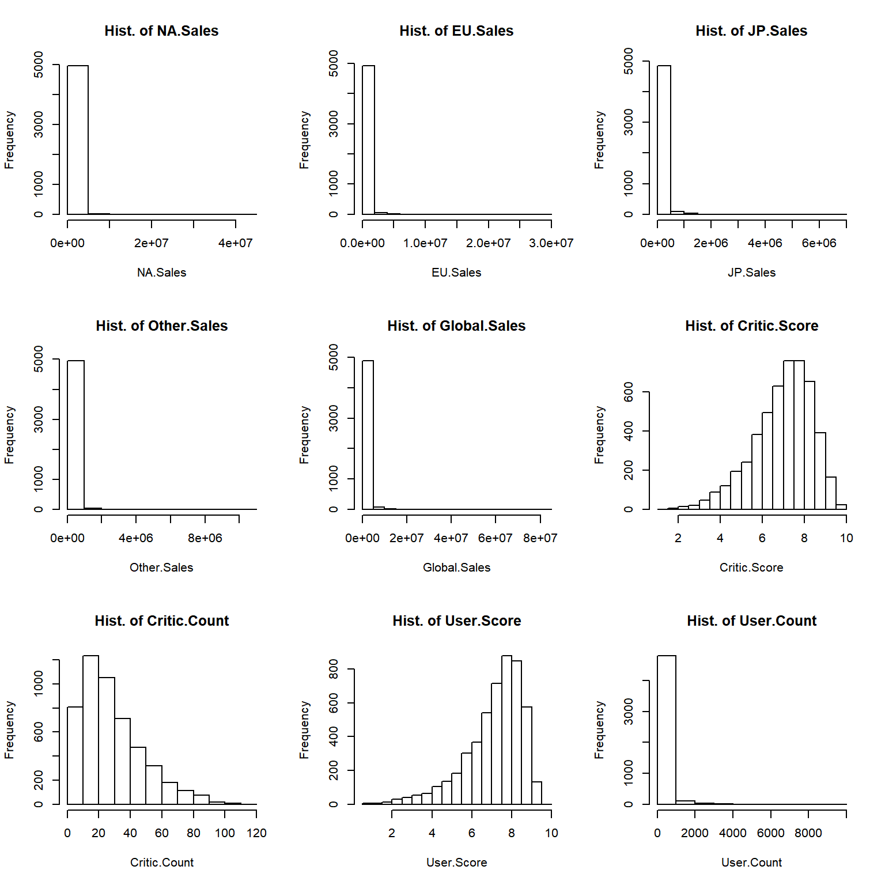
NA.Sales.Log <- log(game$NA.Sales)
EU.Sales.Log <- log(game$EU.Sales)
JP.Sales.Log <- log(game$JP.Sales)
Other.Sales.Log <- log(game$Other.Sales)
Global.Sales.Log <- log(game$Global.Sales)
Critic.Count.Log <- log(game$Critic.Count)
User.Count.Log <- log(game$User.Count)We combine the log variables with the original variables.
game.log <- cbind.data.frame(NA.Sales.Log, EU.Sales.Log, JP.Sales.Log, Other.Sales.Log,
Global.Sales.Log, Critic.Count.Log, User.Count.Log)
game <- cbind.data.frame(game, game.log) # the data we use for analysis
head(game)## Name Platform Year.Release Genre Publisher
## 1 Wii Sports Wii 2006 Sports Nintendo
## 2 Mario Kart Wii Wii 2008 Racing Nintendo
## 3 Wii Sports Resort Wii 2009 Sports Nintendo
## 4 New Super Mario Bros. DS 2006 Platform Nintendo
## 5 Wii Play Wii 2006 Misc Nintendo
## 6 New Super Mario Bros. Wii Wii 2009 Platform Nintendo
## NA.Sales EU.Sales JP.Sales Other.Sales Global.Sales Critic.Score
## 1 41360001 28960001 3770001 8450001 82530001 7.6
## 2 15680001 12760001 3790001 3290001 35520001 8.2
## 3 15610001 10930001 3280001 2950001 32770001 8.0
## 4 11280001 9140001 6500001 2880001 29800001 8.9
## 5 13960001 9180001 2930001 2840001 28920001 5.8
## 6 14440001 6940001 4700001 2240001 28320001 8.7
## Critic.Count User.Score User.Count Developer Rating NA.Sales.Log
## 1 51 8.0 322 Nintendo E 17.53782
## 2 73 8.3 709 Nintendo E 16.56790
## 3 73 8.0 192 Nintendo E 16.56342
## 4 65 8.5 431 Nintendo E 16.23854
## 5 41 6.6 129 Nintendo E 16.45171
## 6 80 8.4 594 Nintendo E 16.48551
## EU.Sales.Log JP.Sales.Log Other.Sales.Log Global.Sales.Log
## 1 17.18143 15.14259 15.94968 18.22867
## 2 16.36183 15.14788 15.00640 17.38561
## 3 16.20702 15.00335 14.89732 17.30502
## 4 16.02817 15.68731 14.87330 17.21002
## 5 16.03254 14.89051 14.85931 17.18004
## 6 15.75281 15.36307 14.62199 17.15908
## Critic.Count.Log User.Count.Log
## 1 3.931826 5.774552
## 2 4.290459 6.563856
## 3 4.290459 5.257495
## 4 4.174387 6.066108
## 5 3.713572 4.859812
## 6 4.382027 6.386879str(game)## 'data.frame': 6825 obs. of 23 variables:
## $ Name : Factor w/ 4377 levels " Tales of Xillia 2",..: 4203 2055 4205 2530 4201 2533 2054 4195 1820 4196 ...
## $ Platform : Factor w/ 17 levels "3DS","DC","DS",..: 13 13 13 3 13 13 3 13 15 13 ...
## $ Year.Release : Factor w/ 25 levels "1985","1988",..: 15 17 18 15 15 18 14 16 19 18 ...
## $ Genre : Factor w/ 12 levels "Action","Adventure",..: 11 7 11 5 4 5 7 11 4 11 ...
## $ Publisher : Factor w/ 262 levels "10TACLE Studios",..: 164 164 164 164 164 164 164 164 147 164 ...
## $ NA.Sales : num 41360001 15680001 15610001 11280001 13960001 ...
## $ EU.Sales : num 28960001 12760001 10930001 9140001 9180001 ...
## $ JP.Sales : num 3770001 3790001 3280001 6500001 2930001 ...
## $ Other.Sales : num 8450001 3290001 2950001 2880001 2840001 ...
## $ Global.Sales : num 82530001 35520001 32770001 29800001 28920001 ...
## $ Critic.Score : num 7.6 8.2 8 8.9 5.8 8.7 9.1 8 6.1 8 ...
## $ Critic.Count : num 51 73 73 65 41 80 64 63 45 33 ...
## $ User.Score : num 8 8.3 8 8.5 6.6 8.4 8.6 7.7 6.3 7.4 ...
## $ User.Count : num 322 709 192 431 129 594 464 146 106 52 ...
## $ Developer : Factor w/ 1289 levels "10tacle Studios, Fusionsphere Systems",..: 779 779 779 779 779 779 779 779 468 779 ...
## $ Rating : Factor w/ 7 levels "AO","E","E10+",..: 2 2 2 2 2 2 2 2 2 2 ...
## $ NA.Sales.Log : num 17.5 16.6 16.6 16.2 16.5 ...
## $ EU.Sales.Log : num 17.2 16.4 16.2 16 16 ...
## $ JP.Sales.Log : num 15.1 15.1 15 15.7 14.9 ...
## $ Other.Sales.Log : num 15.9 15 14.9 14.9 14.9 ...
## $ Global.Sales.Log: num 18.2 17.4 17.3 17.2 17.2 ...
## $ Critic.Count.Log: num 3.93 4.29 4.29 4.17 3.71 ...
## $ User.Count.Log : num 5.77 6.56 5.26 6.07 4.86 ...a <- colnames(game)[c(11, 13, 17:23)] # pick up the numeric columns according to the names
par(mfrow = c(5, 4)) # layout in 5 rows and 4 columns
for (i in 1:length(a)){
sub <- sample(game[a[i]][, 1], 5000)
submean <- mean(sub)
hist(sub, main = paste("Hist. of", a[i], sep = " "), xlab = a[i])
abline(v = submean, col = "blue", lwd = 1)
qqnorm(sub, main = paste("Q-Q Plot of", a[i], sep = " "))
qqline(sub)
if (i == 1) {s.t <- shapiro.test(sub)
} else {s.t <- rbind(s.t, shapiro.test(sub))
}
}
s.t <- s.t[, 1:2]
mode(s.t) = "numeric" # show shapiro.test result as numeric
s.t <- round(data.frame(s.t), 3) # round to decimal 3
s.t$data.name <- a
s.t## statistic p.value data.name
## s.t 0.962 0 Critic.Score
## X 0.910 0 User.Score
## X.1 0.646 0 NA.Sales.Log
## X.2 0.714 0 EU.Sales.Log
## X.3 0.622 0 JP.Sales.Log
## X.4 0.711 0 Other.Sales.Log
## X.5 0.997 0 Global.Sales.Log
## X.6 0.978 0 Critic.Count.Log
## X.7 0.942 0 User.Count.Log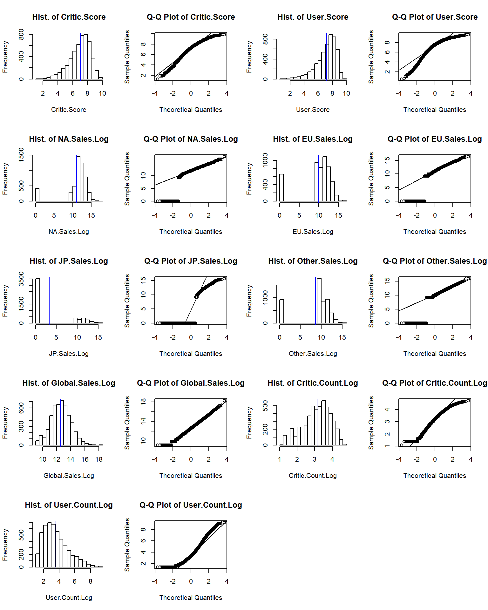
Though the Shapiro test still deny the normality of these log values. We assume they are normal distributed data after log-transformation.
There are lots of interest points in this data set such as the distribution of global and regional sales and their relationship, the correlation of critic score and user score and their counts, whether these scores are the main effect for sales, or the other factors like genre, rating, platform, even publisher affect the sales more, and so on.
14.2 Visualizing of categorical variables
library(wordcloud)
library(ngram)
library(tm)
library(RColorBrewer)
titles <- concatenate(game$Name)
titles <- tolower(titles)
titles <- removeNumbers(titles)
titles <- removePunctuation(titles)
titles <- stripWhitespace(titles)
titles <- removeWords(titles, c(stopwords("en"), "game"))
unigram <- ngram(titles, n = 1)
freq <- tbl_df(get.phrasetable(unigram))
wordcloud(freq$ngrams, freq$freq, random.order = FALSE, rot.per = 0.35,
color=brewer.pal(8, "Dark2"), max.words = 500)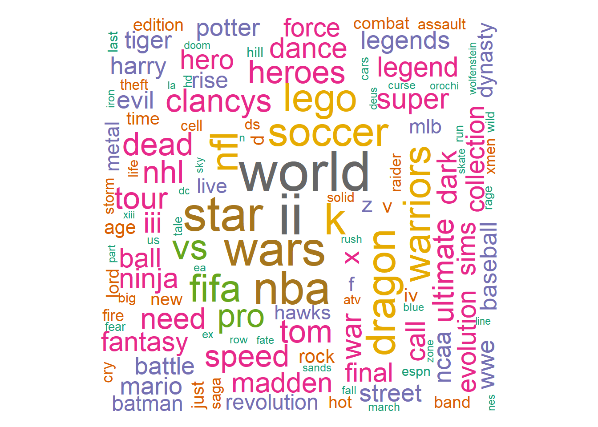
The most common word in game name is world and ii, then star, wars and NBA. Soccer, NFL, dragon, Lego and warriors are the third popular team.
counts <- sort(table(game$Platform), decreasing = TRUE)
percentages <- 100 * counts / length(game$Platform)
barplot(percentages[1:18], las = 3, ylab = "Percentage", col = "green", axis.lty = 1)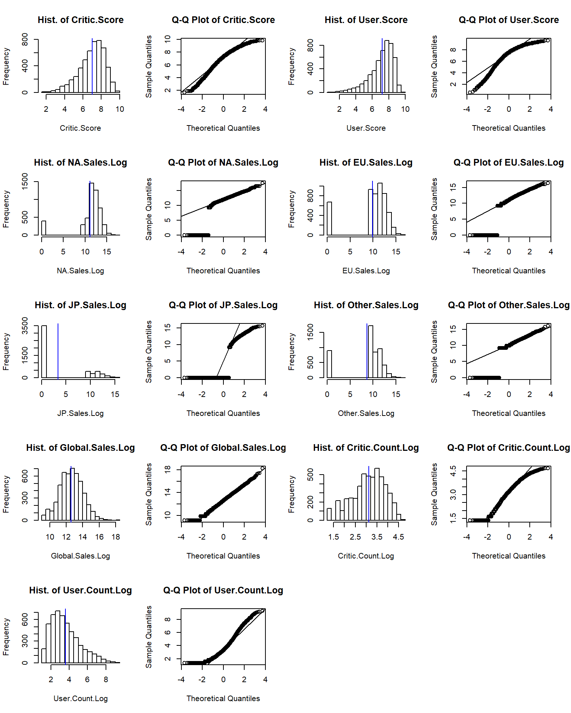
These are the top 18 platforms according to the frequency. PSs occupies big portion.
#regroup platform as Platform.type
pc <- c("PC")
xbox <- c("X360", "XB", "XOne")
nintendo <- c("Wii", "WiiU", "N64", "GC", "NES", "3DS", "DS")
playstation <- c("PS", "PS2", "PS3", "PS4", "PSP", "PSV")
game <- game %>%
mutate(Platform.type = ifelse(Platform %in% pc, "pc",
ifelse(Platform %in% xbox, "xbox",
ifelse(Platform %in% nintendo, "nintendo",
ifelse(Platform %in% playstation, "playstation", "others"))))) library(ggplot2)
ggplot(game, aes(x = Platform.type)) + geom_bar(fill = "blue")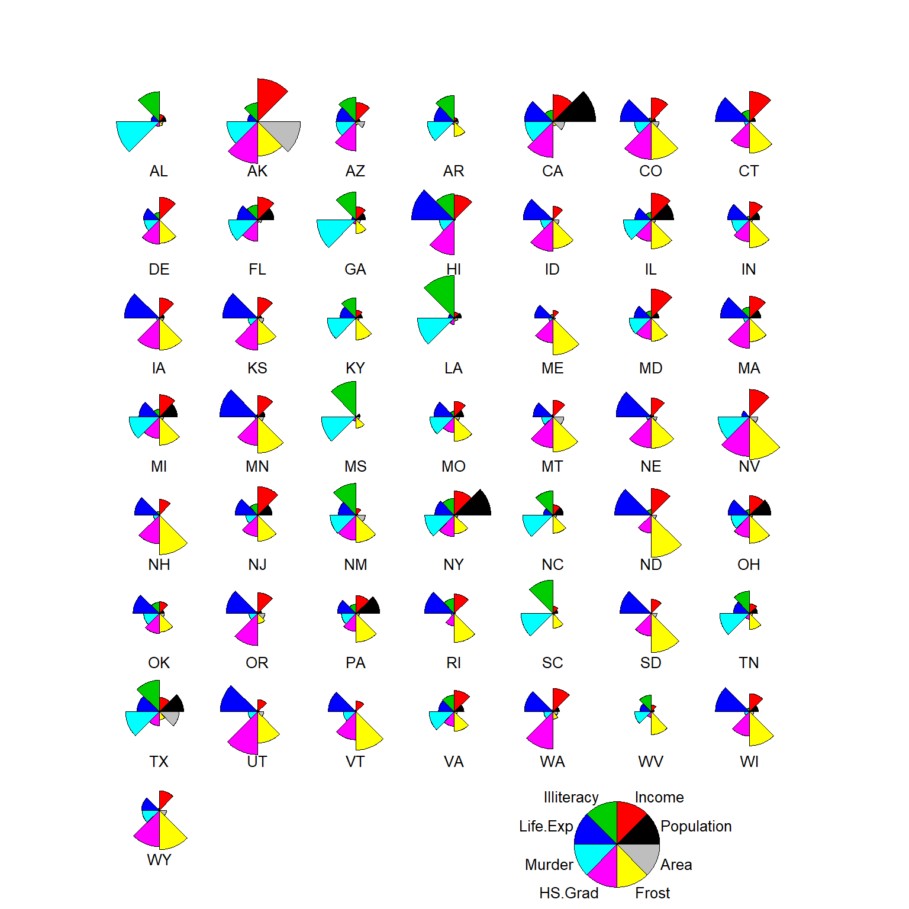
dat <- data.frame(table(game$Genre))
dat$fraction = dat$Freq / sum(dat$Freq)
dat = dat[order(dat$fraction), ]
dat$ymax = cumsum(dat$fraction)
dat$ymin = c(0, head(dat$ymax, n = -1))
names(dat)[1] <- "Genre"
library(ggplot2)
ggplot(dat, aes(fill = dat$Genre, ymax = ymax, ymin = ymin, xmax = 4, xmin = 3)) +
geom_rect(colour = "grey30") + # background color
coord_polar(theta = "y") + # coordinate system to polar
xlim(c(0, 4)) +
labs(title = "Ring plot for Genre type", fill = "Genre") +
theme(plot.title = element_text(hjust = 0.5))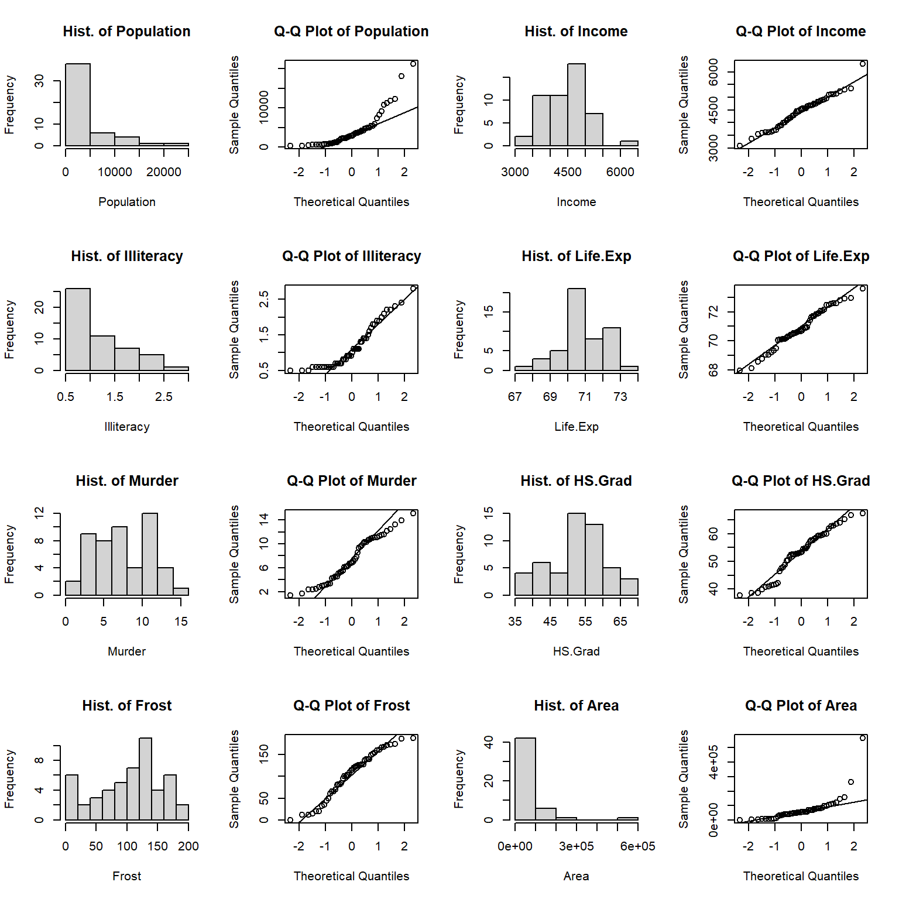
Action, Sports and Shooter are the first three biggest genre. Action occupies almost 25% genre. Three of them together contribute half of genre count.
#regroup Genre as Genre.type
genre <- c("Platform", "Racing", "Simulation", "Sports", "Misc")
#Combat <- c("fighting", "Shooter")
game <- game %>%
mutate(Genre.type = ifelse(Genre %in% genre, as.character(Genre),
ifelse(Genre == "Fighting" | Genre == "Shooter", "Combat",
ifelse(Genre == "Puzzle" | Genre == "Strategy", "Strategy",
"Action/Adventure"))))#regroup Rating as Rating.type
rating <- c("E", "T", "M", "E10+")
game <- game %>% mutate(Rating.type = ifelse(Rating %in% rating, as.character(Rating), "Others")) counts <- sort(table(game$Rating.type), decreasing = TRUE)
names(counts)[1] <- "T - Teen" # rename the names of counts for detail information
names(counts)[2] <- "E - Everyone"
names(counts)[3] <- "M - Mature"
names(counts)[4] <- "E10+ - Everyone 10+"
pct <- paste(round(counts/sum(counts) * 100), "%", sep = " ")
lbls <- paste(names(counts), "\n", pct, sep = " ") # labels with count number
pie(counts, labels = lbls, col = rainbow(length(lbls)),
main="Pie Chart of Ratings with sample sizes")
15## [1] 15According to the order, the most popular ratings are T, E, M and E10+. There are altogether 6722 in 6825 games belong to these four ratings. Other ratings only occupy very little in the all games.
14.3 Correlation among numeric variables
st <- game[, c(11, 13, 17:23)] # take numeric variables as goal matrix
st <- na.omit(st)
library(ellipse) # install.packages("ellipses")
library(corrplot)
corMatrix <- cor(as.matrix(st)) # correlation matrix
col <- colorRampPalette(c("#7F0000", "red", "#FF7F00", "yellow", "#7FFF7F",
"cyan", "#007FFF", "blue", "#00007F"))
corrplot.mixed(corMatrix, order = "AOE", lower = "number", lower.col = "black",
number.cex = .8, upper = "ellipse", upper.col = col(10),
diag = "u", tl.pos = "lt", tl.col = "black")There are high r values of 0.75, 0.65, 0.52 and 0.42 between the log value of Global.Sales and regional sales, we will consider to use Global.Sales.Log as our target sales to analyze the relationship with other variables later. On the other hand, there are good positive correlation between regional sales too. User Score is positive correlated to Critic Score with r of 0.58. There is little correlation between User Count log value and User Score.
plot(hclust(as.dist(1 - cor(as.matrix(st))))) # hierarchical clustering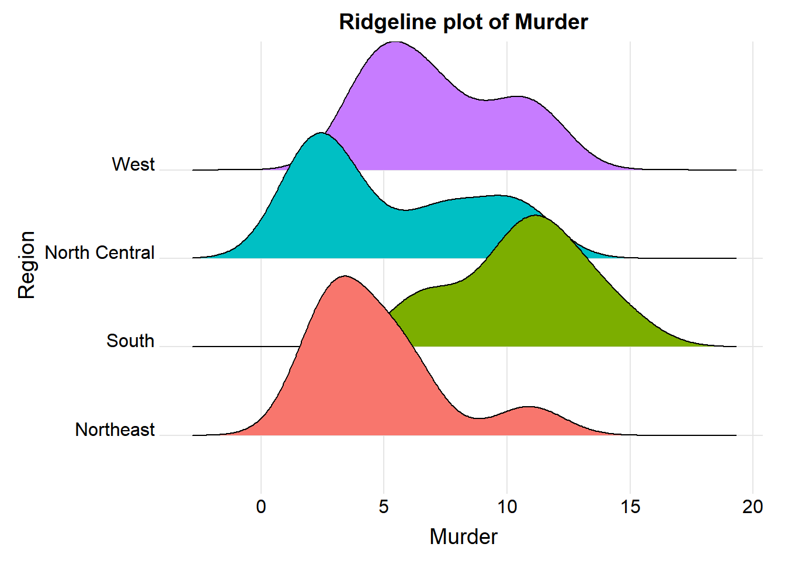
All sales’ log value except JP.Sales.Log build one cluster, scores build second cluster, and log value of counts and JP.Sales build another one. In sales cluster, Other.Sales.Log is the closest to Global.Sales.Log, then NA.Sales.Log, and EU.Sales.Log is the next.
14.4 Analysis of Score and Count
14.4.1 Distribution of two scores
library(ggplot2)
ggplot() +
geom_density(data = game, aes(x=Critic.Score), color = "darkblue", fill = "lightblue") +
geom_density(data = game, aes(x=User.Score), color = "darkgreen", fill = "lightgreen", alpha=.5) +
labs(x = "Critic.Score-blue, User.Score-green", title = "Density plot for critic and user score")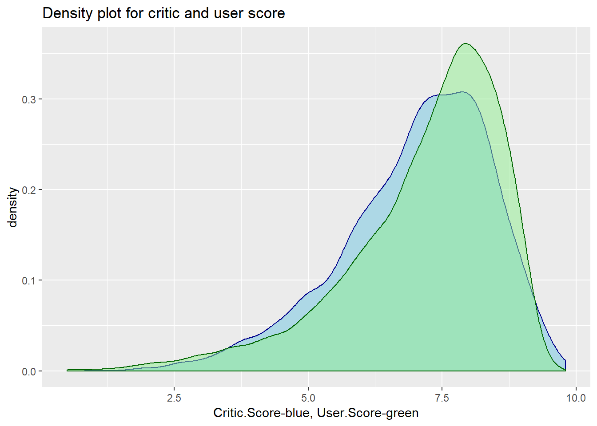
ggplot(game, aes(x = Year.Release, y = Critic.Score, colour = "CriticScore")) +
geom_point(size = 3, alpha = 1.0) + # scatter point of critic score
geom_point(aes(y = User.Score, colour = "UserScore")) + # scatter point of user score
stat_summary(aes(y = Critic.Score, group = 1), fun.y = mean, #add average critic score line
colour = "red", geom = "line", size = 1.5, group = 1) +
stat_summary(aes(y = User.Score, group = 1), fun.y = mean, #add average critic score line
colour = "green", geom = "line", size = 1.5, group = 1) +
stat_summary(aes(y = Critic.Score, group = 1), fun.y = mean, #add average critic score point
colour = "white", geom = "point", size = 2, group = 1) +
stat_summary(aes(y = User.Score, group = 1), fun.y = mean, #add average user score point
colour = "yellow", geom = "point", size = 2, group = 1) +
theme(legend.position = "right",
axis.text.x = element_text(angle = 90),
panel.background = element_rect(fill = "blue"), #background
panel.grid.major = element_blank(), #no panel grid
panel.grid.minor = element_blank()) +
labs(title = "Score distribution of Each Year", x = "Year Release", y = "Scores") +
theme(plot.title = element_text(hjust = 0.5))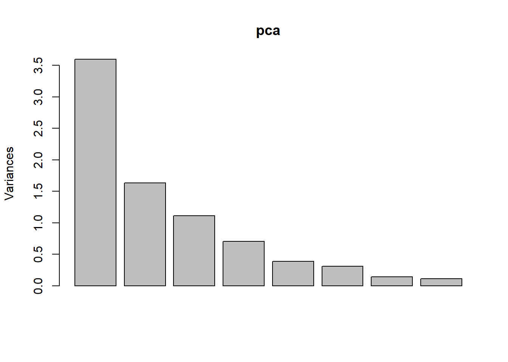
There is not so many evaluation about the game available before 1996. In the early years, averages of Critic.Score are higher than averages of User.Score. From 1998 Users gave higher score then critics on average, the situation kept until 2009. From 2010 till 2016, the trend of early years came back, average critic scores are higher than average user score again.
Between 1996 and 1999, both critics and users intended to give higher scores than the other years.
library(ggpmisc) #package for function stat_poly_eq
formula <- y ~ x
ggplot(game, aes(x = User.Score, y = Critic.Score)) +
geom_point(aes(color = Platform), alpha = .8) +
geom_smooth(method = 'lm', se = FALSE, formula = formula) + #add regression line
theme(legend.position = "bottom") +
stat_poly_eq(formula = formula, #add regression equation and R square value
eq.with.lhs = "italic(hat(y))~`=`~", # add ^ on y
aes(label = paste(..eq.label.., ..rr.label.., sep = "*plain(\",\")~")),
label.x.npc = "left", label.y.npc = 0.92, # position of the equation label
parse = TRUE) 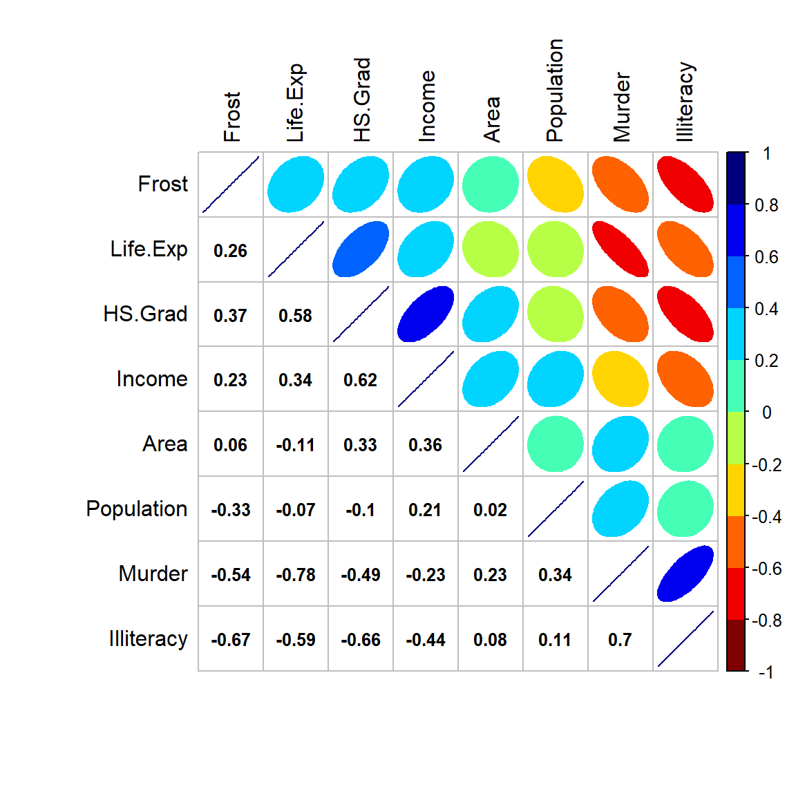
There is good correlation between Critic.Score and User.Score. Some of the GBA games got highest User.Score, while highest Critic.Score came from X360 and PS series.
t.test(game$Critic.Score, game$User.Score)##
## Welch Two Sample t-test
##
## data: game$Critic.Score and game$User.Score
## t = -6.5463, df = 13629, p-value = 6.108e-11
## alternative hypothesis: true difference in means is not equal to 0
## 95 percent confidence interval:
## -0.2058518 -0.1109834
## sample estimates:
## mean of x mean of y
## 7.027209 7.185626T-test with p value of much less than 0.05 let us accept the alternative hypothesis with 95% confidence that there is difference in the means of critic score and user score. The mean of critic score is 7.03, and mean of user score is 7.19.
14.4.2 Score & Top sale game
game$Name <- gsub("Brain Age: Train Your Brain in Minutes a Day", #shorten the game name
"Brain Age: Train Your Brain", game$Name)
p1 <- game %>%
select(Name, User.Score, Critic.Score, Global.Sales) %>%
group_by(Name) %>%
summarise(Total.Sales = sum(Global.Sales), Avg.User.Score = mean(User.Score),
Avg.Critic.Score = mean(Critic.Score)) %>%
arrange(desc(Total.Sales)) %>%
head(20)
ggplot(p1, aes(x = factor(Name, levels = Name))) +
geom_bar(aes(y = Total.Sales/10000000), stat = "identity", fill = "green") +
geom_line(aes(y = Avg.User.Score, group = 1, colour = "Avg.User.Score"), size = 1.5) +
geom_point( aes(y = Avg.User.Score), size = 3, shape = 21, fill = "Yellow" ) +
geom_line(aes(y = Avg.Critic.Score, group = 1, colour = "Avg.Critic.Score"), size = 1.5) +
geom_point(aes(y = Avg.Critic.Score), size = 3, shape = 21, fill = "white") +
theme(axis.text.x = element_text(angle = 90, size = 8)) +
ggtitle("Top Global Sales Game with Score" ) + # add title in the center of the plot
theme(plot.title = element_text(hjust = 0.5)) 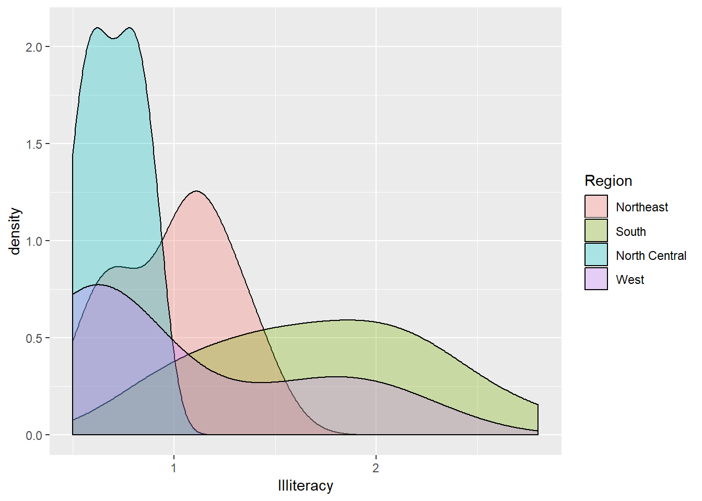
Among these 20 top sale games, top two games, Wii Sports and Grand Theft Auto V have much better sales than the other games. Both of them were scored above 7.5. Grand Theft Auto V even got the highest Critic score among all these top games. Though there are several other games like Grand Theft Auto IV, The Elder Scrolls V: Skyrim have really high scores too. This plot also indicates that for these top games, their global sales have no clear linear correlation with the average User.Score and Critic.Score. For most games, average critic score is higher than average user score. Call of Duty: Modern Warfare 3 and Call of Duty: Ghosts got really lower average user score comparing with other top sales game.
14.4.3 Score & Rating
summary(aov(game$Critic.Score ~ game$Rating))## Df Sum Sq Mean Sq F value Pr(>F)
## game$Rating 6 102 17.02 8.913 1.03e-09 ***
## Residuals 6818 13023 1.91
## ---
## Signif. codes: 0 '***' 0.001 '**' 0.01 '*' 0.05 '.' 0.1 ' ' 1summary(aov(game$User.Score ~ game$Rating))## Df Sum Sq Mean Sq F value Pr(>F)
## game$Rating 6 122 20.333 9.883 6.99e-11 ***
## Residuals 6818 14027 2.057
## ---
## Signif. codes: 0 '***' 0.001 '**' 0.01 '*' 0.05 '.' 0.1 ' ' 1There is significant difference in at least two different ratings for both critic score and user score means.
p1 <- ggplot(game, aes(x = Critic.Score, fill = Rating)) +
geom_density(alpha = 0.3)
p2 <- ggplot(game, aes(x = User.Score, fill = Rating)) +
geom_density(alpha = 0.3)
library(gridExtra)
grid.arrange(p1, p2, nrow = 1,ncol = 2)
In total, Rating M got more higher Critic.Score than others, E10+ got more lower Critic.Score; For User.Score, as same as Critic.Score, E10+ is low. While the others are similar and higher.
14.4.4 7) Score & Genre
library(scales)##
## Attaching package: 'scales'## The following object is masked from 'package:readr':
##
## col_factorgame %>%
group_by(Genre, Critic.Score) %>%
summarise(Total.Sales = sum(Global.Sales)) %>%
arrange(desc(Total.Sales)) %>%
ggplot(aes(x = Critic.Score, y = Total.Sales, group = Genre, fill = Genre)) +
geom_bar(stat = "identity", position = "fill", alpha = 0.7) +
scale_y_continuous(labels = percent_format()) +
theme(legend.position = "right", axis.text.x = element_text(angle = 90),
panel.background = element_rect(fill = "black"),
panel.grid.major = element_blank(),
panel.grid.minor=element_blank())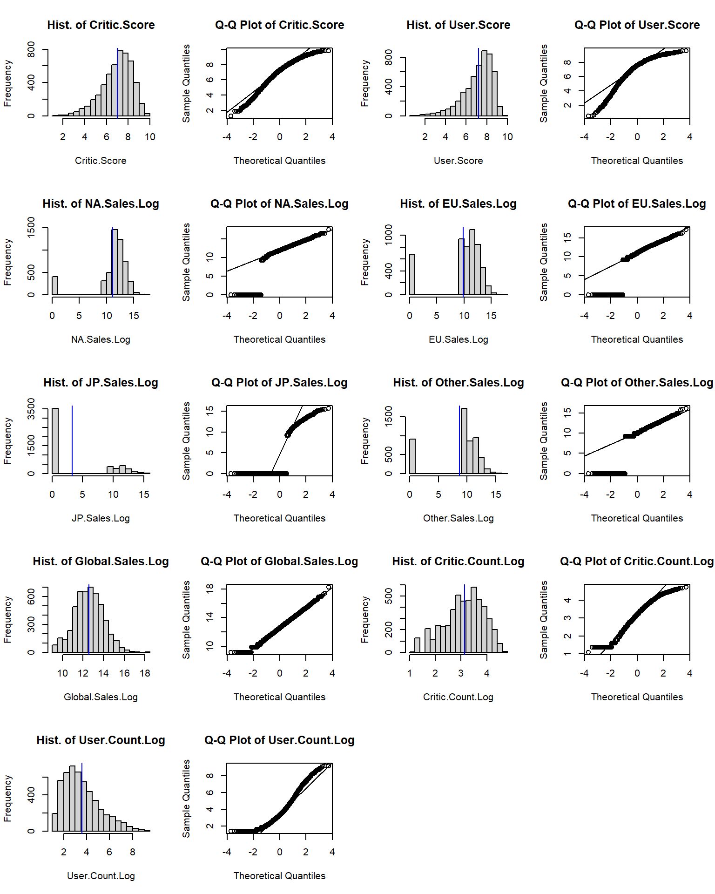
Some Racing and Adventure game got the lowest Critic.Score. On the other side, some action game got excellent evaluation from critics and have great Global.Sales. Sports, Shooter and Platform came next.
14.4.5 8) Score & Global sales
p1 <- ggplot(game, aes(x = Critic.Score, y = Global.Sales.Log)) +
geom_point(aes(color = Genre)) +
geom_smooth()
p2 <- ggplot(game, aes(x = User.Score, y = Global.Sales.Log)) +
geom_point(aes(color = Rating)) +
geom_smooth()
grid.arrange(p1, p2, nrow = 1,ncol = 2)
Independent from Genre and Rating, the higher of Score, the better of Global.Sales.Log. Especially for Critic.Score bigger than 9, Global.Sales straight rising. Global.Sales rise slowly with User.Score.
game.bottom <- select(filter(game, Critic.Score < 2.5), c(Global.Sales.Log, Critic.Score))
game.low <- select(filter(game, Critic.Score >= 2.5 & Critic.Score < 5),
c(Global.Sales.Log, Critic.Score))
game.middle <- select(filter(game, Critic.Score >= 5 & Critic.Score < 7.5),
c(Global.Sales.Log, Critic.Score))
game.high <- select(filter(game, Critic.Score >= 7.5 & Critic.Score < 9),
c(Global.Sales.Log, Critic.Score))
game.top <- select(filter(game, Critic.Score >= 9), c(Global.Sales.Log, Critic.Score))
formula <- y ~ x
p1 <- ggplot(game.bottom, aes(x = Critic.Score, y = Global.Sales.Log)) +
geom_point() + geom_smooth()
p2 <- ggplot(game.low, aes(x = Critic.Score, y = Global.Sales.Log)) +
geom_point() + geom_smooth()
p3 <- ggplot(game.middle, aes(x = Critic.Score, y = Global.Sales.Log)) +
geom_point() + geom_smooth()
grid.arrange(p1, p2, p3, ncol = 3)## `geom_smooth()` using method = 'loess' and formula 'y ~ x'
## `geom_smooth()` using method = 'loess' and formula 'y ~ x'## `geom_smooth()` using method = 'gam' and formula 'y ~ s(x, bs = "cs")'
r1 <- round(with(game.high, cor(Critic.Score, Global.Sales.Log)), digits = 2)
p4 <- ggplot(game.high, aes(x = Critic.Score, y = Global.Sales.Log)) +
geom_point() + geom_smooth() +
stat_poly_eq(formula = formula, #add regression equation and R square value
eq.with.lhs = "italic(hat(y))~`=`~", # add ^ on y
aes(label = paste(..eq.label.., ..rr.label.., sep = "*plain(\",\")~")),
label.x.npc = "left", label.y.npc = 0.92, # position of the equation label
parse = TRUE) +
geom_text(x = 7.62, y = 17.2, label = paste("r =", r1, sep = " ")) # add correlation rate r
r2 <- round(with(game.top, cor(Critic.Score, Global.Sales.Log)), digits = 2)
p5 <- ggplot(game.top, aes(x = Critic.Score, y = Global.Sales.Log)) +
geom_point() + geom_smooth() +
stat_poly_eq(formula = formula, #add regression equation and R square value
eq.with.lhs = "italic(hat(y))~`=`~", # add ^ on y
aes(label = paste(..eq.label.., ..rr.label.., sep = "*plain(\",\")~")),
label.x.npc = "right", label.y.npc = 0.1, # position of the equation label
parse = TRUE)+
geom_text(x = 9.5, y = 9.5, label = paste("r =", r2, sep = " ")) # add correlation rate r
grid.arrange(p4, p5, ncol = 2)## `geom_smooth()` using method = 'gam' and formula 'y ~ s(x, bs = "cs")'## `geom_smooth()` using method = 'loess' and formula 'y ~ x'
#ggarrange(p4, p5, ncol = 2)If we seperate the citic score into 5 groups: bottom(<2.5), low(between2.5 & 5), middle(between 5 & 7.5), high(between 7.5 & 9) and top(>=9), there is no linear relationship between Global.Sales.Log and Critic.Score in the first three groups. For “high” group, correlation r is 0.22 and the linear equation of critic score can only explain about 0.05 global sales log; While for “top” group, correlation r is higher as 0.35 and the linear equation of critic score can only explain more global sales log up to 0.13.
14.4.6 9) Score & Top Sale Developer
library(reshape2)
p <- game %>%
select(Developer, Critic.Score, User.Score, Global.Sales) %>%
group_by(Developer) %>%
summarise(Avg.Critic.Score = mean(Critic.Score), Avg.User.Score = mean(User.Score),
Total.Sales = sum(Global.Sales/4/10^7)) %>%
filter(Total.Sales > 1)
#arrange according to sales, melt only developer and scores
p1 <- p[, -4]
p1 <- melt(p1, value.name = "Scores")## Using Developer as id variablesp2 <- p[, 4]
comp <- cbind.data.frame(p1, p2)
comp <- comp[rev(order(comp$Total.Sales)), ]
lv <- unique(comp[1])
ggplot(comp, aes(x = factor(Developer, levels = as.factor(lv[,1])))) +
geom_bar(aes(y = Scores, fill = variable), stat = "identity", width = .5, position = "dodge") +
theme(axis.text.x = element_text(angle = 90)) +
labs(title = "Top sale Developers and their Scores", x = "Top Developers") +
theme(plot.title = element_text(hjust = 0.5)) +
geom_line(aes(y = Total.Sales, group = 1), col = "navyblue", size = 1) 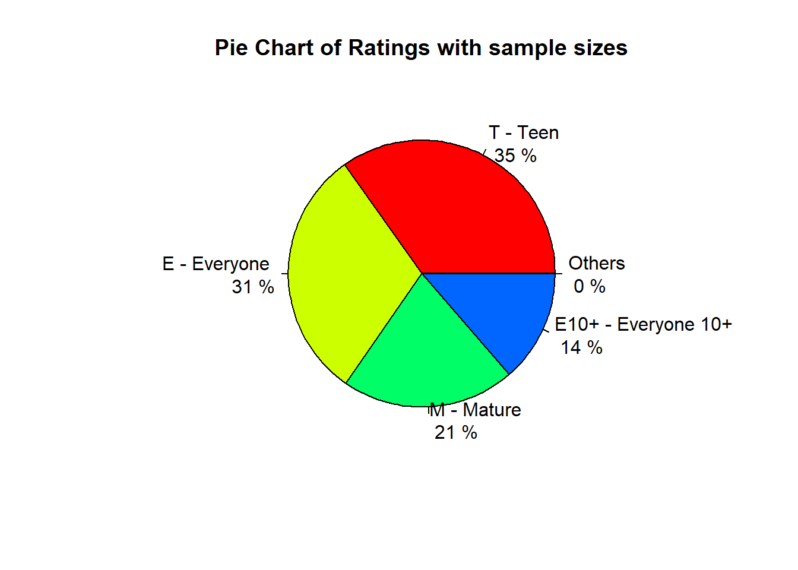
According to our analysis, Nintendo is the only one which has total sales over 400 millions, much more than the other developers. The other top developers included EA Sports, EA Canada, Rockstar North, Capcorm and so on. This is a little bitter different order from the top developers according to number of games. But EA Sports, EA Canada and Capcorm are included in the top five in both list. Naughty Dogs has the highest user score, while Rockstar North got highest critic score. Infinity Ward got pretty good critic score, but user gave it a lowest score. Best sale developer Nintendo have pretty good scores, but not the highest in both scores.
14.4.7 10) Score & Publisher
p1 <- game %>%
select(Publisher, Critic.Score, User.Score) %>%
group_by(Publisher) %>%
summarise(Avg.Critic.Score = mean(Critic.Score), Avg.User.Score = mean(User.Score)) %>%
filter( !Avg.Critic.Score =='NA' & !Avg.User.Score =='NA' & Avg.Critic.Score > 8) %>%
arrange(desc(Avg.Critic.Score))
ggplot(p1, aes(x = factor(Publisher, levels = Publisher))) +
geom_line(aes(y = Avg.User.Score, group = 1, colour = "Avg.User.Score"), size = 1.5) +
geom_point( aes(y = Avg.User.Score), size = 3, shape = 21, fill = "yellow" ) +
geom_line(aes(y = Avg.Critic.Score, group = 1, colour = "Avg.Critic.Score"), size = 1.5) +
geom_point(aes(y = Avg.Critic.Score), size = 3, shape = 21, fill = "white") +
theme(axis.text.x = element_text(angle = 90, size = 8)) +
labs(title = "Top Publishers with Average Critic Score greater than 8", x = "Top Publisher" )
These are the top publisher who got highest average critic score. Valve, Valve Software and Blue Byte are the top three publisher who got the highest average critic score. For Activision Blizzard and Slightly Mad Studios, though they got relatively higher average critic score, but their average user score are not ideal. While for Kadokawa Shoten, Nihon Falcom Corporation and Sony Computer Entertainment Europe, they got even much higher average user score than average critic score.
14.5 Analysis of Sales
14.5.1 1) By Year.Release
counts <- data.frame(table(game$Year.Release))
p <- game %>%
select(Year.Release, Global.Sales) %>%
group_by(Year.Release) %>%
summarise(Total.Sales = sum(Global.Sales))
q <- cbind.data.frame(p, counts[2])
names(q)[3] <- "count"
q$count <- as.numeric(q$count)
p1 <- ggplot(q, aes(x = Year.Release, y = Total.Sales, label = q$count)) +
geom_col(fill = "green") +
geom_point(y = q$count * 500000, size = 3, shape = 21, fill = "Yellow" ) +
geom_text(y = (q$count - 30) * 500000) + # position of the text: count of games each year
theme(axis.text.x = element_text(angle = 90),
panel.background = element_rect(fill = "purple"),
panel.grid.major = element_blank(),
panel.grid.minor = element_blank()) +
scale_x_discrete("Year.Release", labels = as.character(Year.Release), breaks = Year.Release)
labs(title = "Global Sales Each Year", x = "Year Release", y = "Global Sales")## $title
## [1] "Global Sales Each Year"
##
## $x
## [1] "Year Release"
##
## $y
## [1] "Global Sales"
##
## attr(,"class")
## [1] "labels"r <- round(with(q, cor(count, Total.Sales)), digits = 2)
formula <- y ~ x
library(ggpmisc)
p2 <- ggplot(q, aes(x = count, y = Total.Sales)) +
geom_point() +
geom_smooth() +
stat_poly_eq(formula = formula, #add regression equation and R square value
eq.with.lhs = "italic(hat(y))~`=`~", # add ^ on y
aes(label = paste(..eq.label.., ..rr.label.., sep = "*plain(\",\")~")),
label.x.npc = "left", label.y.npc = 0.92, # position of the equation label
parse = TRUE) +
geom_text(x = 25, y = 410000000, label = paste("r =", r, sep = " ")) # add correlation rate r
grid.arrange(p1, p2, ncol = 1, nrow = 2)## `geom_smooth()` using method = 'loess' and formula 'y ~ x'
We can notice from the histogram of total sales that there is very little sales before 1996. There is only one game was released for these years. For several years between 1996 and 2000 the sales increased slowly. The count of games too, from 7 to 30. After that there is a big climbing in total sales. Over 100 games were released each year after that. The top sales happened in 2008, and the most count games was released that year(592). After that total sales of the video games sloped down. And the count of games reduced too. There is a good correlation between total sales and the count of game sold with r=0.96. If we use the equation top left in the figure, we can explain 0.92 of the total sales.
14.5.2 2) By Region
game %>%
select(Year.Release, NA.Sales.Log, EU.Sales.Log, JP.Sales.Log,
Other.Sales.Log, Global.Sales.Log) %>%
group_by(Year.Release) %>%
summarise(NorthAmerica = sum(NA.Sales.Log), Europe = sum(EU.Sales.Log),
Japan = sum(JP.Sales.Log), Other = sum(Other.Sales.Log),
Global = sum(Global.Sales.Log)) %>%
ggplot(aes(x = Year.Release, y = NorthAmerica, colour="NorthAmerica")) +
geom_point() +
geom_line(group = 1) +
geom_point(aes(y = Europe, colour = "Europe")) +
geom_line(aes(y = Europe, colour = "Europe", group = 1)) +
geom_point(aes(y = Japan, colour = "Japan")) +
geom_line(aes(y = Japan, colour = "Japan", group = 1)) +
geom_point(aes(y = Other, colour = "Other")) +
geom_line(aes(y = Other, colour = "Other", group = 1)) +
geom_point(aes(y = Global, colour = "Global")) +
geom_line(aes(y = Global, colour = "Global", group = 1)) +
theme(legend.position = "bottom",
axis.text.x = element_text(angle = 90),
panel.background = element_rect(fill="pink"),
panel.grid.major = element_blank(),
panel.grid.minor = element_blank()) +
scale_x_discrete("Year.Release", labels = as.character(Year.Release),
breaks = Year.Release) +
labs(title = "Regional Global Sales Log Distribution Each Year",
x = "Year Release", y = "Total Sales Log Value") +
theme(plot.title = element_text(hjust = 0.5))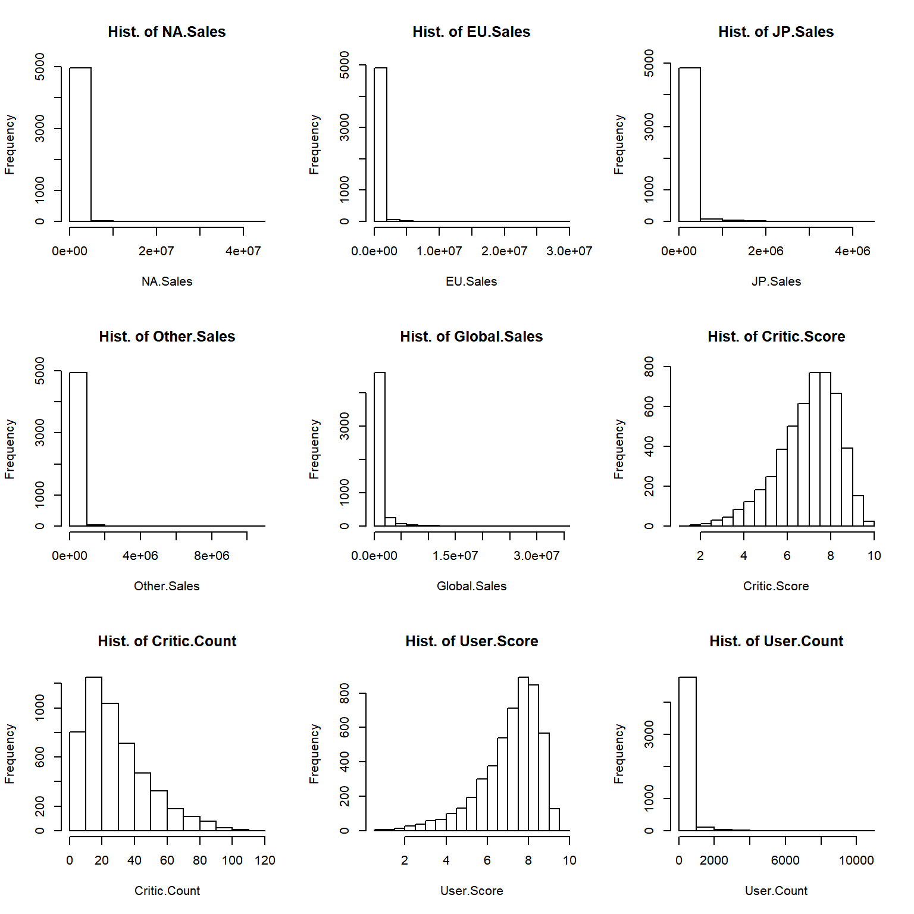
The pattern of log value for these regional sales in those years are similar for Global, North America, Europe, and Others. Japan is much different from them. Same conclusion as cluster analysis.
14.5.3 3) By Genre
game %>%
select(Year.Release, Global.Sales.Log, Genre) %>%
group_by(Year.Release, Genre) %>%
summarise(Total.Sales.Log = sum(Global.Sales.Log)) %>%
ggplot(aes(x = Year.Release, y = Total.Sales.Log, group = Genre, fill = Genre)) +
geom_area() +
theme(legend.position = "right", axis.text.x = element_text(angle = 90),
panel.background = element_rect(fill = "blue"),
panel.grid.major = element_blank(),
panel.grid.minor=element_blank()) +
scale_x_discrete("Year.Release", labels = as.character(Year.Release),
breaks = Year.Release)+
labs(title = "Year Wise Log Global Sales by Genre") +
theme(plot.title = element_text(hjust = 0.5)) 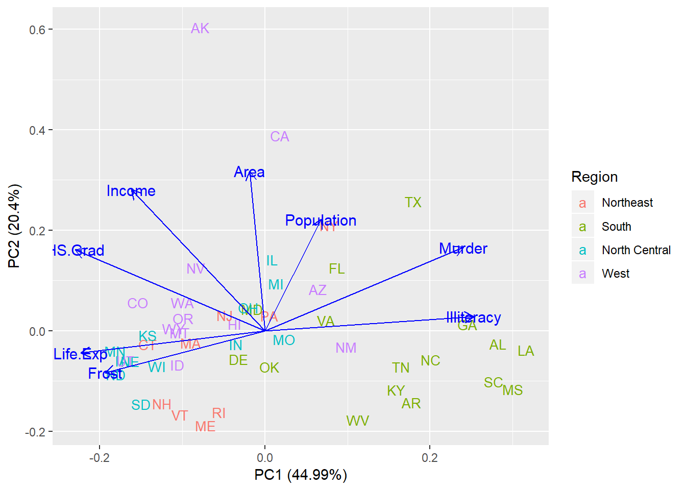
In total the golden years are from 2007 to 2009 for most of these Genres. Action keeps on the top sale for all those years. Strategy is on the bottom sale list.
library(scales )
# reorder according to the length per Genre, to make the plots look beautiful and keep axis y stable
game$Genre. <- with(game, reorder(Genre, Genre, function(x) -length(x)))
P0 <- game %>%
select(Genre., Global.Sales) %>%
group_by(Genre.) %>%
summarise(GlobalSales = sum(Global.Sales)) %>%
arrange(desc(GlobalSales)) %>%
mutate(p.GlobalSales = GlobalSales/sum(GlobalSales) * 100) %>% #percentage in total Sales
arrange(desc(p.GlobalSales)) %>%
ggplot(aes(x = Genre., y = p.GlobalSales)) +
geom_col(fill = "purple", alpha = 0.8) +
coord_flip()
P1 <- game %>%
select(Genre., NA.Sales) %>%
group_by(Genre.) %>%
summarise(NASales = sum(NA.Sales)) %>%
arrange(desc(NASales)) %>%
mutate(p.NASales = NASales / sum(NASales) * 100) %>%
arrange(desc(p.NASales)) %>%
ggplot(aes(x = Genre., y = p.NASales)) +
geom_col(fill = "red", alpha = 0.8) +
coord_flip() +
theme(axis.title.y = element_blank(), axis.text.y = element_blank())
P2 <- game %>%
select(Genre.,EU.Sales) %>%
group_by(Genre.) %>%
summarise(EUSales = sum(EU.Sales)) %>%
arrange(desc(EUSales)) %>%
mutate(p.EUSales = EUSales / sum(EUSales) * 100) %>%
arrange(desc(p.EUSales)) %>%
ggplot(aes(x = Genre., y = p.EUSales)) +
geom_col(fill = "yellow", alpha = 0.8) +
coord_flip() +
theme(axis.title.y = element_blank(), axis.text.y = element_blank())
P3 <- game %>%
select(Genre., JP.Sales) %>%
group_by(Genre.) %>%
summarise(JPSales = sum(JP.Sales)) %>%
arrange(desc(JPSales)) %>%
mutate(p.JPSales = JPSales / sum(JPSales) * 100) %>%
arrange(desc(p.JPSales)) %>%
ggplot(aes(x = Genre., y = p.JPSales)) +
geom_col(fill = "blue", alpha = 0.8) +
coord_flip() +
theme(axis.title.y = element_blank(), axis.text.y = element_blank())
P4 <- game %>%
select(Genre., Other.Sales) %>%
group_by(Genre.) %>%
summarise(OtherSales = sum(Other.Sales)) %>%
arrange(desc(OtherSales)) %>%
mutate(p.OtherSales = OtherSales / sum(OtherSales) * 100) %>%
arrange(desc(p.OtherSales)) %>%
ggplot(aes(x = Genre., y = p.OtherSales)) +
geom_col(fill = "green", alpha = 0.8) +
coord_flip()+
theme(axis.title.y = element_blank(), axis.text.y = element_blank())
library(ggpubr)## Loading required package: magrittrlibrary(magrittr)
ggarrange(P0, P1, P2, P3, P4, ncol = 5, nrow = 1, widths = c(1.3, 1, 1, 1, 1)) 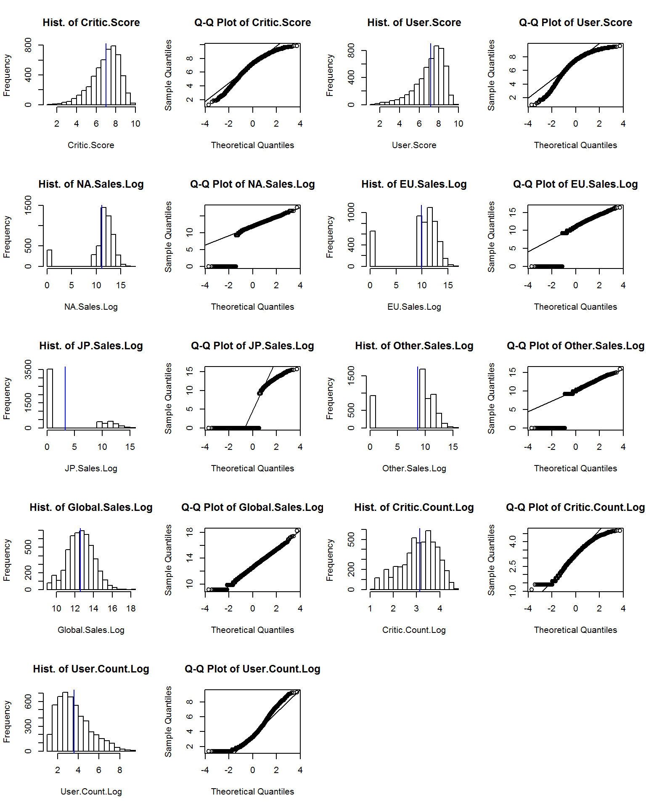
Generally North America, Europe Sales and other sales follow the global Sales pattern. They all have Action, Sports and Shooter as top 3 genres, Puzzle, Adventure and Strategy as bottom 3 genres. Japan market is different from them. The Role-Playing gets the largest portion in Japan sales, while Shooter plays much less portion comparing with the other regions. Platform and Puzzle are popular in Japan than in other regions. As other regions, action and sports are still the most popular Genre in Japan.
14.5.4 4) By Rating
game %>%
select(Year.Release, Global.Sales, Rating) %>%
group_by(Year.Release, Rating) %>%
summarise(Total.Sales = sum(Global.Sales)) %>%
ggplot(aes(x = Year.Release, y = Total.Sales, group = Rating, fill = Rating)) +
geom_area() +
theme(legend.position = "right", axis.text.x = element_text(angle = 90),
panel.background = element_rect(fill = "green"),
panel.grid.major = element_blank(), panel.grid.minor = element_blank()) +
scale_x_discrete("Year.Release", labels = as.character(Year.Release), breaks = Year.Release) +
labs(title = "Year Wise Global Sales by Rating") +
theme(plot.title = element_text(hjust = 0.5)) +
coord_flip()Rating E and E10+ run the first two in global sales. Compare with E, E10+, M and T, the other rating sales were so little and even not show in our area figure. 2008 is a good year for all ratings. 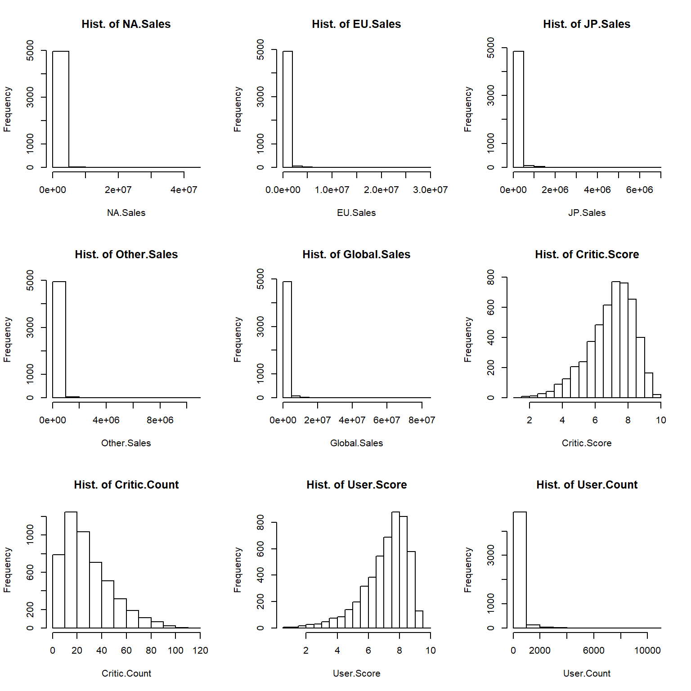
The patterns for Rating are almost the same for different region sales and global sales. E is the biggest rating, then M and T, E10+ is the smallest in these four ratings. In Europe there is a little of bit of AO portion, while in Japan, some K-A games are released too.
par(mfrow = c(1, 2))
x <- game[,6:10]
matplot(t(x), type = "l", col = rainbow(9)[game$Rating])
legend("center", levels(game$Rating), fill = rainbow(9), cex = 0.8, pt.cex = 1)
text(c(1.2, 2, 3, 3.9, 4.8), 80000000, colnames(x))
There is one E game which was mainly sold in North America and Europe which was really popular and produced a sale tale of over 80 millions’ global sale, while North America contributed half of the global sales. We can check the game data and know it’s Wii Sports released in 2006. We also noticed that M game is popular in North America(blue), which contributed a lot to global sales, E games(green) have good sale in Europe, while Japanese like T(red) And E(green) games. It’s balance in rating for “other” region.
14.5.5 5) By Rating & Genre
game %>%
select(Rating, Global.Sales, Genre) %>%
group_by(Rating, Genre) %>%
summarise(Total.Sales = sum(Global.Sales)) %>%
arrange(desc(Total.Sales)) %>%
ggplot(aes(x = Genre, y = Total.Sales, fill = Rating)) +
geom_bar(stat = "Identity") +
theme(axis.text.x = element_text(angle = 45))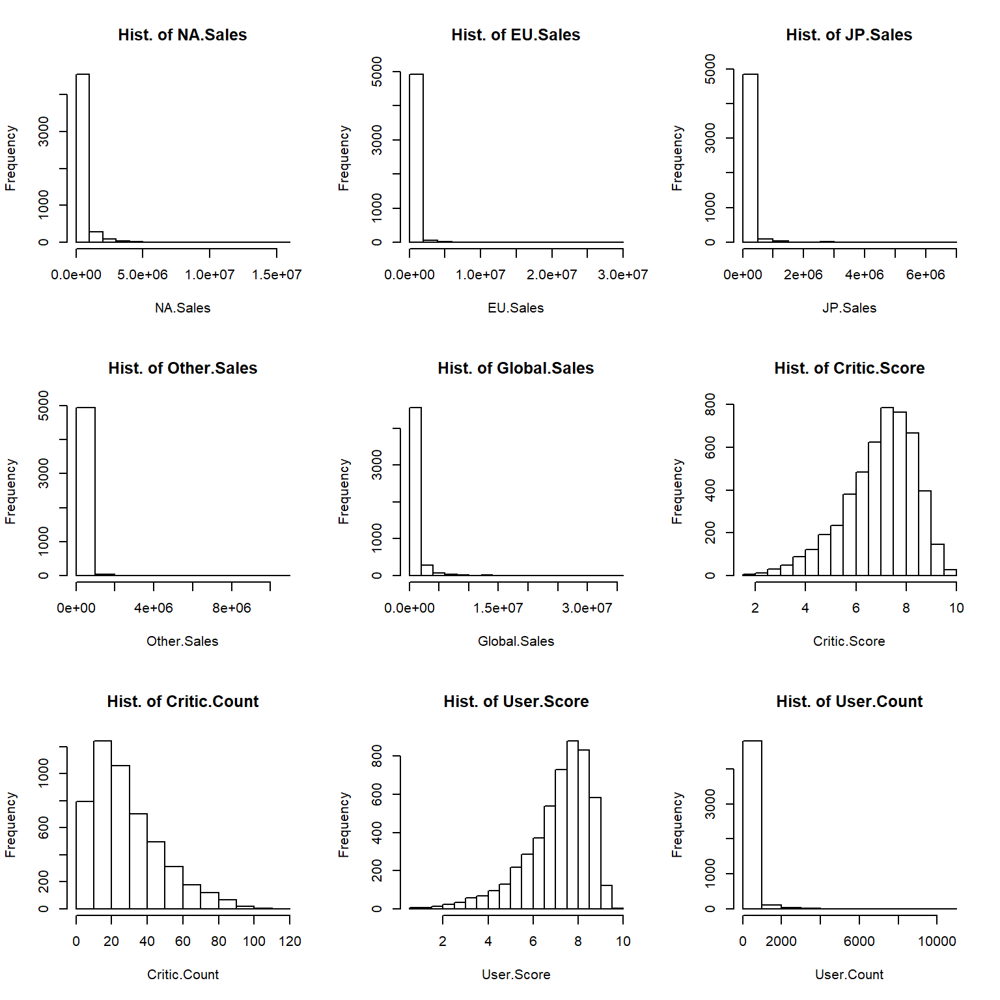
library(ggmosaic)
ggplot(game) +
geom_mosaic(aes(x = product(Rating), fill = Platform.type), na.rm=TRUE) +
labs(x="Rating", y = "Platform Type", title="Mosaic Plot") +
theme(axis.text.y = element_blank())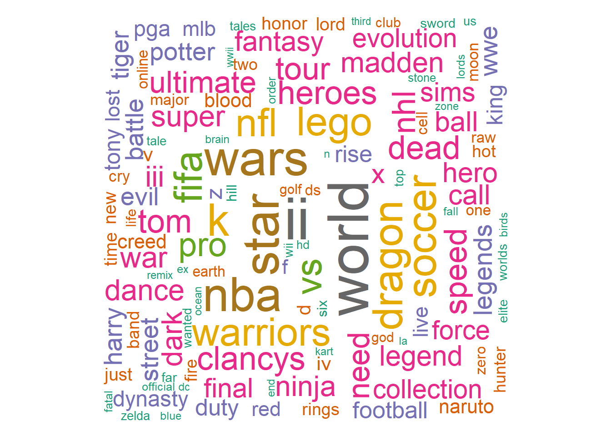
p1 <- game %>%
select(Rating, Global.Sales, Genre, User.Score) %>%
group_by(Rating, Genre) %>%
summarise(Total.Sales = sum(Global.Sales), Avg.Score = mean(User.Score)) %>%
arrange(desc(Total.Sales)) %>%
head(20) %>%
ggplot(aes(x = Genre, y = Total.Sales, fill = Rating)) +
geom_bar(stat = "Identity", position = "stack") +
geom_line(aes(y = Avg.Score*10^8, group = 1), col="yellow",size = 2) +
geom_point(aes(y = Avg.Score*10^8, col=Avg.Score*10^8),size = 3) +
theme(axis.text.x = element_text(angle = 90),
panel.background = element_rect(fill = "black"),
panel.grid.major = element_blank(),
panel.grid.minor = element_blank()) +
labs(x = "Genre", y = "Global Sales", fill = "Rating") +
scale_fill_brewer(palette = "Spectral")
p2 <- game %>%
select(Rating, JP.Sales, Genre, User.Score) %>%
group_by(Rating, Genre) %>%
summarise(Total.Sales = sum(JP.Sales), Avg.Score = mean(User.Score)) %>%
arrange(desc(Total.Sales)) %>%
head(20) %>%
ggplot(aes(x = Genre, y = Total.Sales, fill = Rating)) +
geom_bar(stat = "Identity",position = "stack") +
geom_line(aes(y = Avg.Score*10^7, group = 1), col = "yellow",size = 2) +
geom_point(aes(y = Avg.Score*10^7, col=Avg.Score*10^7),size = 3) +
theme(axis.text.x = element_text(angle = 90),
panel.background = element_rect(fill = "black"),
panel.grid.major = element_blank(),
panel.grid.minor=element_blank()) +
labs(x = "Genre", y = "JP Sales", fill = "Rating") +
scale_fill_brewer(palette = "Spectral")
grid.arrange(p1, p2, ncol = 2, top = "Distribution of genre and rating for top sales")
For the top 20 sales of genre*rating combination, same as we discussed previously, Action, Shooter and Sports have biggest Global.Sales while Role-Playing and Action are sold better in Japan. Rating M contribute big portion in both Action and Shooter global sales, Rating E sports game are popular globally. In Japan, teenage play a lot of Role-Playing games, they also play part of action and fighting games. Almost half of Japan action games are rated as M and lots of other genre games are rated as E. In both sales plots, Role-Playing games got highest average user score.
14.5.6 6) By Platform
library(viridis)## Loading required package: viridisLite##
## Attaching package: 'viridis'## The following object is masked from 'package:scales':
##
## viridis_pallibrary(scales)
p <- game %>%
group_by(Platform.type, Year.Release) %>%
summarise(total = sum(Global.Sales))
p$Year.Release. <- as.numeric(as.character(p$Year.Release))
ggplot(p, aes(x = Year.Release., fill = Platform.type)) +
geom_density(position = "fill") +
labs(title = "Distribution of platform type and market share by released year", y = "Market Share") +
theme(plot.title = element_text(hjust = 0.5)) +
scale_fill_viridis(discrete = TRUE) +
scale_y_continuous(labels = percent_format()) 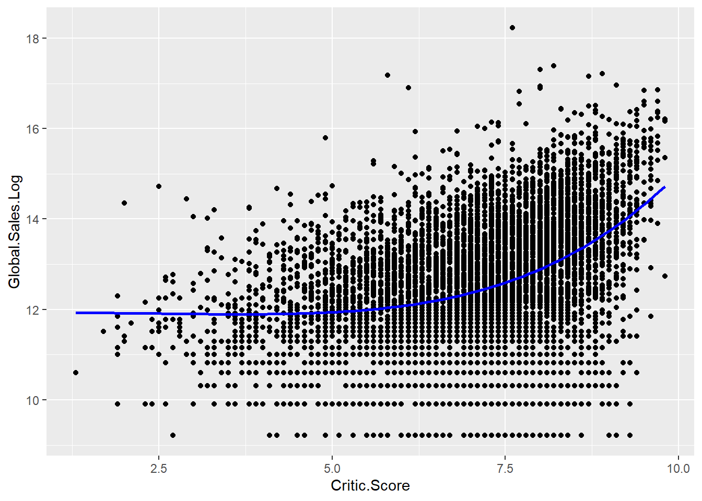
Nintendo and xbox came after 1990. Before that pc and playstation occupied the game market, pc are the main platform at that time. After 1995, the portion of pc and playstation shrinked, while nintendo and xbox grew fast and took over more portion than playstation and pc in the market. Together with Nintendo and xbox, there were other game platform sprouting out in early 1990s, but they last for 20 years and dissapeared. From around 2010, the portions of these 4 platforms keep relatively evenly and stablly.
game %>%
group_by(Platform.type, Critic.Score) %>%
summarise(Total.Sales = sum(Global.Sales)) %>%
arrange(desc(Total.Sales)) %>%
ggplot(aes(x = Critic.Score, y = Total.Sales, group = Platform.type, fill = Platform.type)) +
geom_bar(stat = "identity", position = "fill", alpha = 0.7) +
scale_y_continuous(labels = percent_format()) +
labs(title = "Distribution of platform type and market share by critical score", y = "Market Share") +
theme(legend.position = "right", axis.text.x = element_text(angle = 90),
panel.background = element_rect(fill = "black"),
panel.grid.major = element_blank(),
panel.grid.minor=element_blank())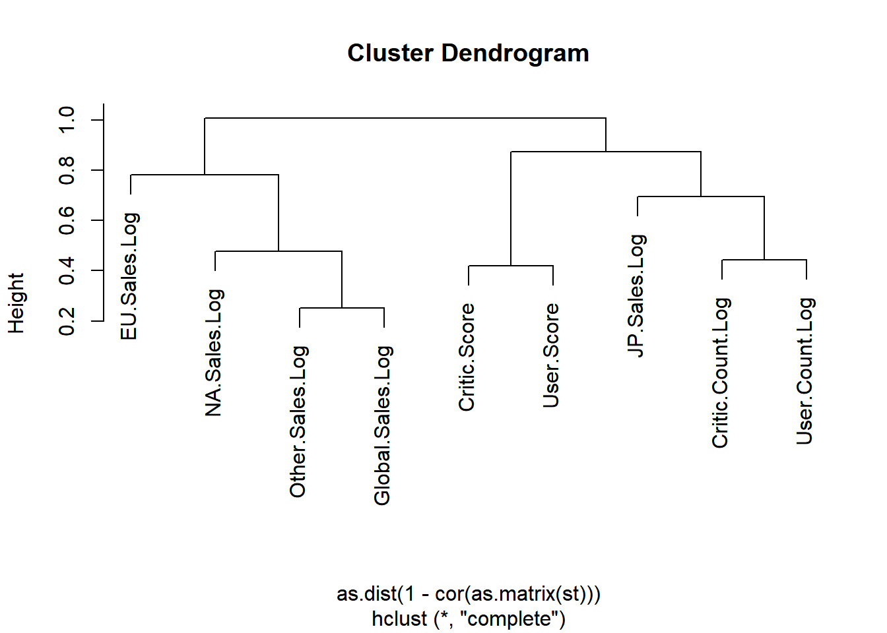
*show year every 10 , sales 45 degree
#library(ggiraph)
ggplot(game, aes(Global.Sales, Year.Release)) +
geom_point(aes(color = Platform.type)) + facet_grid(~ Rating) +
ggtitle("Global Sales Vs. Year of Release by Rating") 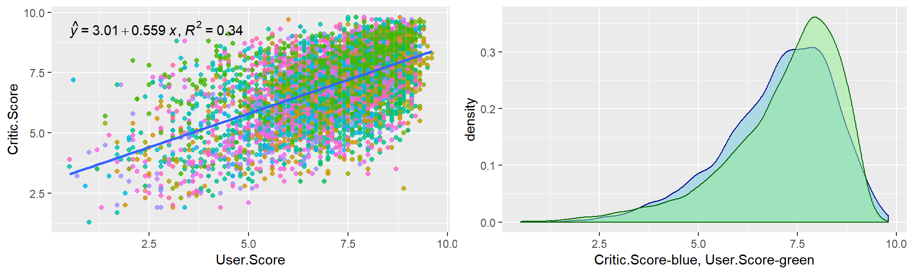
ggplot(game, aes(Global.Sales, Year.Release)) +
geom_point(aes(color = Platform.type)) + facet_grid(~ Platform.type) +
ggtitle("Global Sales Vs. Year of Release by Platform.type") 
game$Platform.type <- as.factor(game$Platform.type)
ggplot(game, aes(x = Platform.type, y = Global.Sales.Log, fill = Genre)) +
geom_boxplot() 
In total, PC have lower Global sales log comparing with other platform type, while palystation have more higher sale mediums for different genre. For Xbox, Shooter is the top sale genre, puzzle is not a popular; Misc genre contribute a lot for Nintendo, strategy is at the bottom of Nintendo sale log list. For nintendo and playstation, different genre keep balance in global sales log. Nintendo have several real high global sales for some games.
#compute 1-way ANOVA test forlog value of global sales by Platform Type
model <- aov(Global.Sales.Log ~ Platform.type, data = game)
summary(model)## Df Sum Sq Mean Sq F value Pr(>F)
## Platform.type 4 1283 320.8 181.2 <2e-16 ***
## Residuals 6820 12077 1.8
## ---
## Signif. codes: 0 '***' 0.001 '**' 0.01 '*' 0.05 '.' 0.1 ' ' 1tukey <- TukeyHSD(model)
tukey## Tukey multiple comparisons of means
## 95% family-wise confidence level
##
## Fit: aov(formula = Global.Sales.Log ~ Platform.type, data = game)
##
## $Platform.type
## diff lwr upr p adj
## others-nintendo -0.24010322 -0.48731168 0.007105248 0.0617768
## pc-nintendo -1.32914311 -1.49896515 -1.159321071 0.0000000
## playstation-nintendo 0.21083015 0.09556168 0.326098618 0.0000061
## xbox-nintendo 0.04846421 -0.08162001 0.178548439 0.8478736
## pc-others -1.08903989 -1.35880736 -0.819272426 0.0000000
## playstation-others 0.45093337 0.21172262 0.690144113 0.0000028
## xbox-others 0.28856743 0.04187559 0.535259278 0.0123768
## playstation-pc 1.53997326 1.38201984 1.697926677 0.0000000
## xbox-pc 1.37760733 1.20853821 1.546676446 0.0000000
## xbox-playstation -0.16236593 -0.27652224 -0.048209629 0.0009961par(mar = c(4, 10, 2, 1))
plot(tukey, las = 1)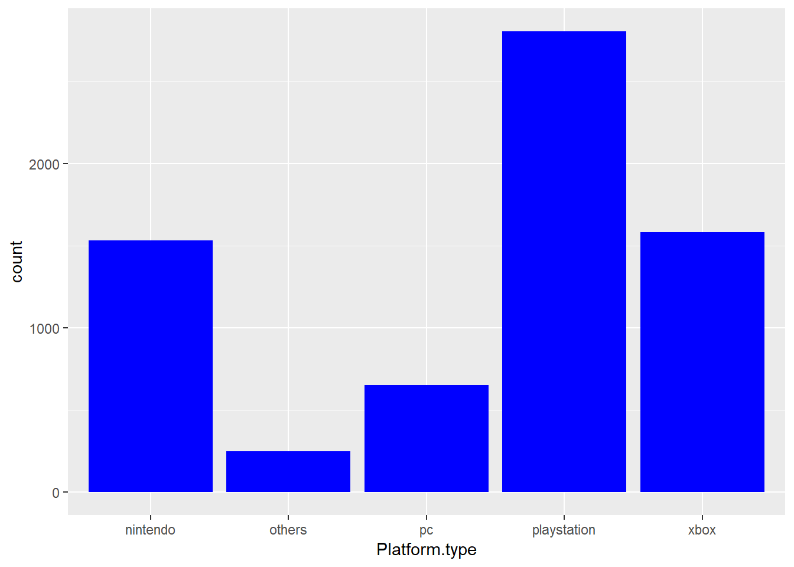
ANOVA test shows that there is at lease one of the platform type is significant different from the others. The plot of Turkey tests shows that there is significant difference between all other pairs of platform types but between xbox and nintendo, others and nintendo.
14.6 Analysis for numeric matrix: Heatmap and PCA
library(gplots)
#require(RColorBrewer)
hclust2 <- function(x, ...) # average linkage method
hclust(x, method="average", ...)
dist2 <- function(x, ...) #distance method
as.dist(1-cor(t(x), method="pearson"))
# Transform data, standardize
st <- game[, c(11, 13, 17:23)]
st.matrix <- as.matrix(st)
s <- apply(st.matrix, 2, function(y)(y - mean(y)) / sd(y))
a <- heatmap.2(s,
distfun = dist2, # use 1-Pearson as distance
hclustfun = hclust2, # use average linkage
col = greenred(75), #color green red
density.info = "none", # turns off density plot inside color legend
trace = "none", # turns off trace lines inside the heat map
scale = "none",
RowSideColors = rainbow(5)[as.factor(game$Platform.type)],
srtCol = 45, #column labels at 45 degree
margins = c(8, 6), # bottom and right margins
lhei = c(2, 10))
legend("topright", levels(as.factor(game$Platform.type)),
fill = rainbow(5), cex = 0.8) # add legend 
Figure 14.1: Heat map for whole game sales data set
The heat map clustered these columns into different groups, same as Cluster Dendrogram plot, all sales logs except JP.Sales.Log combined as one cluster, JP.Sales.Log together with tow count logs build another cluster, and two scores combined as another cluster; Also, we can find on the left side of the map, all observations are clustered into four middle clusters, then separated into two big clusters, each two middle clusters combined into one big clusters. PC and some playstation games gather together to build the second little cluster on the left bottom.
#rownames(st) = make.names(Name, unique=TRUE)
pca = prcomp(st, scale = T) #scale = T to normalize the data
plot(pca) # plot the amount of variance each principal components captures.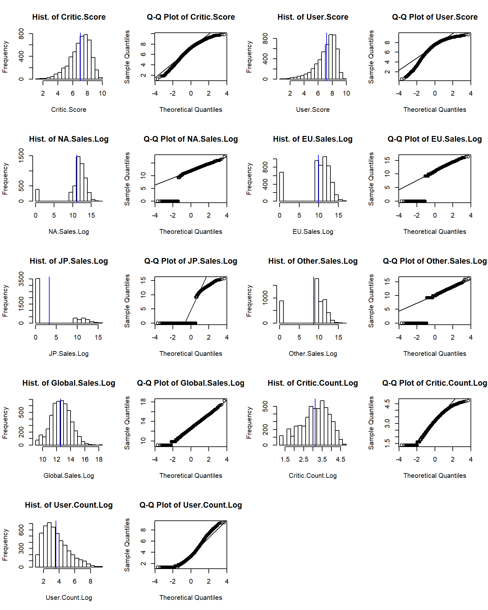
#str(pca) # this shows the structure of the object, listing all parts.
summary(pca) #shows the importance of the components## Importance of components:
## PC1 PC2 PC3 PC4 PC5 PC6 PC7
## Standard deviation 1.8862 1.2623 1.0124 0.93400 0.80751 0.70404 0.6090
## Proportion of Variance 0.3953 0.1770 0.1139 0.09693 0.07245 0.05508 0.0412
## Cumulative Proportion 0.3953 0.5723 0.6862 0.78316 0.85561 0.91068 0.9519
## PC8 PC9
## Standard deviation 0.53487 0.38329
## Proportion of Variance 0.03179 0.01632
## Cumulative Proportion 0.98368 1.00000percentVar <- round(100 * summary(pca)$importance[2, 1:3], 0) # compute % variances
percentVar## PC1 PC2 PC3
## 40 18 11The first three components are 40%, 18% and 11%, together 69% of the variance. The first two components contribute 58% of the variance.
head(pca$x) # the new coordinate values for each observation## PC1 PC2 PC3 PC4 PC5 PC6
## [1,] -5.337840 -1.5425166 0.2148701 -0.9310124 0.9108405 -0.3403442
## [2,] -5.362199 -0.5974062 0.4825383 -0.8908894 0.5115049 -0.3116997
## [3,] -4.927962 -0.9618487 0.2311185 -0.9861267 0.5348391 -0.6280182
## [4,] -5.295960 -0.3242512 0.1013105 -0.9933864 0.6407655 -0.1718503
## [5,] -3.783444 -2.3065954 0.9632205 -1.1245323 1.0135062 -0.7365037
## [6,] -5.345388 -0.3008932 0.3339654 -0.9821817 0.3644934 -0.2868611
## PC7 PC8 PC9
## [1,] 0.36945558 0.43170108 1.2721742
## [2,] 0.36577429 0.46022159 0.9140274
## [3,] 0.24775320 -0.05232101 0.9839195
## [4,] 0.45391170 0.06974085 0.7992214
## [5,] 0.09935275 0.40325747 1.0982611
## [6,] 0.44603528 0.20989323 0.8046071pcaData <- as.data.frame(pca$x[, 1:2]) #First and Second principal component value
pcaData <- cbind(pcaData, game$Platform.type) #add platform type as third col. for cluster purpose
colnames(pcaData) <- c("PC1", "PC2", "Platform")
ggplot(pcaData, aes(PC1, PC2, color = Platform, shape = Platform)) +
geom_point(size = 0.8) +
xlab(paste0("PC1: ", percentVar[1], "% variance")) + # x label
ylab(paste0("PC2: ", percentVar[2], "% variance")) + # y label
ggtitle("Principal component analysis (PCA)") + # title
theme(aspect.ratio = 1) # width and height ratio
PC, xbox, playstation and nintendo occupy in their own positions in the PCA figure, which illustrate that they play different important role in components of the variance of PC1 and PC2.
set.seed(123)
# Compute and plot wss for k = 2 to k = 15 to find the best k for clusters
#The elbow method looks at the percentage of variance explained as a function of the number of clusters :https://www.r-bloggers.com/finding-optimal-number-of-clusters/
#iter.max=15 to ensure the algorithm converges and nstart=50 to ensure that at least 50 random sets are choosen
k.max <- 15
scaled_data = as.matrix(scale(st)) # Scale and center data, as matrix
wss <- sapply(1:k.max,
function(k){kmeans(scaled_data, k, nstart = 50, iter.max = 15 )$tot.withinss})
plot(1:k.max, wss,
type = "b", pch = 19, frame = FALSE,
xlab = "Number of clusters K",
ylab = "Total within-clusters sum of squares")
Figure 14.2: Kmeans figure using ggfortify
#library(mclust)
#d_clust <- Mclust(as.matrix(scaled_data), G=1:15,
#modelNames = mclust.options("emModelNames"))
#d_clust$BIC
#plot(d_clust)
#library(NbClust)
#nb <- NbClust(scaled_data, diss=NULL, distance = "euclidean",
# min.nc=2, max.nc=5, method = "kmeans",
#index = "all", alphaBeale = 0.1)
library(ggfortify)
set.seed(1)
autoplot(kmeans(st, 3), data = st, label = FALSE, label.size = 0.1)
Figure 14.2: Kmeans figure using ggfortify
From the wss plot we find the best k for our data st is 2. Kmeans plot, as similar as PCA plot, explains PC1 44% and PC2 26%, altogether 66% of variance. It separate the games into two different color clusters. Each cluster is located in two different areas. This match the heat map that two middle clusters combined into one big cluster, and there are two big clusters in total. Together with PCA figure, we will find that top of the first cluster is contributed mainly by pc, and some playstation, and a little bit of nintendo; Bottom of the first cluster is contributed mainly by xbox and platstation, and some nintendo too. Top of second cluster is built by xbox and nintendo, there are some playstation and others platform too. Bottom of second cluster is related to nintendo, playstation and xbox evenly.
library(cluster) autoplot(fanny(pcaData, 3), frame = TRUE)
14.7 Models for Global Sales
Because there are two many of levels in Publisher and Developer, and there are apparent correlation between them, we use only top ten levels of Publisher and classified the other publishers as “Others”; Because of the good correlation between Critic.Score and User.Score, we use only critic score; Same reason, we will not put “other.sale.log” in our model.
#re-categorize publisher into 13 groups
Publisher. <- head(names(sort(table(game$Publisher), decreasing = TRUE)), 12)
game <- game %>%
mutate(Publisher.type = ifelse(Publisher %in% Publisher., as.character(Publisher), "Others"))
game.log <- game[, c(3, 11, 13, 16, 21:25, 29)]
game.log$Genre.type <- as.factor(game.log$Genre.type)
game.log$Publisher.type <- as.factor(game.log$Publisher.type)
summary(game.log)## Year.Release Critic.Score User.Score Rating
## 2008 : 592 Min. :1.300 Min. :0.500 AO : 1
## 2007 : 590 1st Qu.:6.200 1st Qu.:6.500 E :2082
## 2005 : 562 Median :7.200 Median :7.500 E10+: 930
## 2009 : 550 Mean :7.027 Mean :7.186 K-A : 1
## 2006 : 528 3rd Qu.:8.000 3rd Qu.:8.200 M :1433
## 2003 : 498 Max. :9.800 Max. :9.600 RP : 1
## (Other):3505 T :2377
## Global.Sales.Log Critic.Count.Log User.Count.Log Platform.type
## Min. : 9.21 Min. :1.099 Min. :1.386 nintendo :1535
## 1st Qu.:11.61 1st Qu.:2.639 1st Qu.:2.398 others : 251
## Median :12.58 Median :3.219 Median :3.296 pc : 651
## Mean :12.58 Mean :3.125 Mean :3.588 playstation:2806
## 3rd Qu.:13.53 3rd Qu.:3.664 3rd Qu.:4.489 xbox :1582
## Max. :18.23 Max. :4.727 Max. :9.275
##
## Genre.type Publisher.type
## Action/Adventure:2590 Others :2566
## Combat :1242 Electronic Arts : 944
## Sports : 943 Ubisoft : 496
## Racing : 581 Activision : 492
## Platform : 403 Sony Computer Entertainment: 316
## Strategy : 385 THQ : 307
## (Other) : 681 (Other) :1704str(game.log)## 'data.frame': 6825 obs. of 10 variables:
## $ Year.Release : Factor w/ 25 levels "1985","1988",..: 15 17 18 15 15 18 14 16 19 18 ...
## $ Critic.Score : num 7.6 8.2 8 8.9 5.8 8.7 9.1 8 6.1 8 ...
## $ User.Score : num 8 8.3 8 8.5 6.6 8.4 8.6 7.7 6.3 7.4 ...
## $ Rating : Factor w/ 7 levels "AO","E","E10+",..: 2 2 2 2 2 2 2 2 2 2 ...
## $ Global.Sales.Log: num 18.2 17.4 17.3 17.2 17.2 ...
## $ Critic.Count.Log: num 3.93 4.29 4.29 4.17 3.71 ...
## $ User.Count.Log : num 5.77 6.56 5.26 6.07 4.86 ...
## $ Platform.type : Factor w/ 5 levels "nintendo","others",..: 1 1 1 1 1 1 1 1 5 1 ...
## $ Genre.type : Factor w/ 8 levels "Action/Adventure",..: 7 5 7 4 3 4 5 7 3 7 ...
## $ Publisher.type : Factor w/ 13 levels "Activision","Atari",..: 7 7 7 7 7 7 7 7 8 7 ...model <- lm(Global.Sales.Log ~ ., data = game.log)
summary(model)##
## Call:
## lm(formula = Global.Sales.Log ~ ., data = game.log)
##
## Residuals:
## Min 1Q Median 3Q Max
## -4.8649 -0.5731 0.0201 0.5895 4.2732
##
## Coefficients:
## Estimate Std. Error t value
## (Intercept) 10.71640 1.30807 8.193
## Year.Release1988 -3.29954 1.30632 -2.526
## Year.Release1992 -1.74762 1.30549 -1.339
## Year.Release1994 3.13785 1.30664 2.401
## Year.Release1996 1.84430 0.99838 1.847
## Year.Release1997 1.25844 0.95925 1.312
## Year.Release1998 0.84769 0.94314 0.899
## Year.Release1999 0.71424 0.93989 0.760
## Year.Release2000 0.80687 0.92881 0.869
## Year.Release2001 0.79390 0.92604 0.857
## Year.Release2002 0.59258 0.92533 0.640
## Year.Release2003 0.36996 0.92518 0.400
## Year.Release2004 0.53724 0.92528 0.581
## Year.Release2005 0.19977 0.92506 0.216
## Year.Release2006 0.11858 0.92505 0.128
## Year.Release2007 0.36392 0.92495 0.393
## Year.Release2008 0.51766 0.92501 0.560
## Year.Release2009 0.42851 0.92499 0.463
## Year.Release2010 0.57568 0.92523 0.622
## Year.Release2011 0.37861 0.92527 0.409
## Year.Release2012 -0.01031 0.92586 -0.011
## Year.Release2013 -0.14424 0.92634 -0.156
## Year.Release2014 -0.35679 0.92645 -0.385
## Year.Release2015 -0.45103 0.92664 -0.487
## Year.Release2016 -0.82241 0.92651 -0.888
## Critic.Score 0.14093 0.01234 11.419
## User.Score -0.05743 0.01055 -5.443
## RatingE -0.56818 0.92470 -0.614
## RatingE10+ -0.62424 0.92462 -0.675
## RatingK-A -1.44761 1.35963 -1.065
## RatingM -1.05089 0.92406 -1.137
## RatingRP -0.02935 1.30711 -0.022
## RatingT -0.91178 0.92421 -0.987
## Critic.Count.Log 0.09882 0.02240 4.412
## User.Count.Log 0.57620 0.01299 44.344
## Platform.typeothers -0.17891 0.06643 -2.693
## Platform.typepc -2.43384 0.05246 -46.398
## Platform.typeplaystation 0.12782 0.03398 3.761
## Platform.typexbox -0.13423 0.03764 -3.567
## Genre.typeCombat 0.04058 0.03311 1.226
## Genre.typeMisc 0.45990 0.05285 8.701
## Genre.typePlatform -0.06325 0.05311 -1.191
## Genre.typeRacing 0.01118 0.04654 0.240
## Genre.typeSimulation 0.52613 0.05929 8.874
## Genre.typeSports 0.10473 0.04550 2.302
## Genre.typeStrategy -0.33057 0.05318 -6.216
## Publisher.typeAtari -0.50153 0.08214 -6.106
## Publisher.typeCapcom -0.72436 0.07885 -9.187
## Publisher.typeElectronic Arts -0.11366 0.05342 -2.128
## Publisher.typeKonami Digital Entertainment -0.67449 0.07323 -9.211
## Publisher.typeNamco Bandai Games -0.55156 0.07421 -7.432
## Publisher.typeNintendo 0.07571 0.07541 1.004
## Publisher.typeOthers -0.63418 0.04633 -13.689
## Publisher.typeSega -0.51815 0.06973 -7.431
## Publisher.typeSony Computer Entertainment -0.60272 0.06972 -8.644
## Publisher.typeTake-Two Interactive -0.26543 0.07111 -3.733
## Publisher.typeTHQ -0.08086 0.06848 -1.181
## Publisher.typeUbisoft -0.36278 0.05929 -6.118
## Pr(>|t|)
## (Intercept) 3.03e-16 ***
## Year.Release1988 0.011565 *
## Year.Release1992 0.180723
## Year.Release1994 0.016357 *
## Year.Release1996 0.064748 .
## Year.Release1997 0.189598
## Year.Release1998 0.368794
## Year.Release1999 0.447327
## Year.Release2000 0.385032
## Year.Release2001 0.391305
## Year.Release2002 0.521932
## Year.Release2003 0.689255
## Year.Release2004 0.561512
## Year.Release2005 0.829032
## Year.Release2006 0.898006
## Year.Release2007 0.694002
## Year.Release2008 0.575755
## Year.Release2009 0.643193
## Year.Release2010 0.533830
## Year.Release2011 0.682418
## Year.Release2012 0.991113
## Year.Release2013 0.876263
## Year.Release2014 0.700165
## Year.Release2015 0.626461
## Year.Release2016 0.374766
## Critic.Score < 2e-16 ***
## User.Score 5.43e-08 ***
## RatingE 0.538943
## RatingE10+ 0.499615
## RatingK-A 0.287046
## RatingM 0.255474
## RatingRP 0.982088
## RatingT 0.323896
## Critic.Count.Log 1.04e-05 ***
## User.Count.Log < 2e-16 ***
## Platform.typeothers 0.007092 **
## Platform.typepc < 2e-16 ***
## Platform.typeplaystation 0.000171 ***
## Platform.typexbox 0.000364 ***
## Genre.typeCombat 0.220393
## Genre.typeMisc < 2e-16 ***
## Genre.typePlatform 0.233697
## Genre.typeRacing 0.810107
## Genre.typeSimulation < 2e-16 ***
## Genre.typeSports 0.021378 *
## Genre.typeStrategy 5.42e-10 ***
## Publisher.typeAtari 1.08e-09 ***
## Publisher.typeCapcom < 2e-16 ***
## Publisher.typeElectronic Arts 0.033403 *
## Publisher.typeKonami Digital Entertainment < 2e-16 ***
## Publisher.typeNamco Bandai Games 1.20e-13 ***
## Publisher.typeNintendo 0.315459
## Publisher.typeOthers < 2e-16 ***
## Publisher.typeSega 1.21e-13 ***
## Publisher.typeSony Computer Entertainment < 2e-16 ***
## Publisher.typeTake-Two Interactive 0.000191 ***
## Publisher.typeTHQ 0.237709
## Publisher.typeUbisoft 9.99e-10 ***
## ---
## Signif. codes: 0 '***' 0.001 '**' 0.01 '*' 0.05 '.' 0.1 ' ' 1
##
## Residual standard error: 0.921 on 6767 degrees of freedom
## Multiple R-squared: 0.5704, Adjusted R-squared: 0.5667
## F-statistic: 157.6 on 57 and 6767 DF, p-value: < 2.2e-16model <- aov(Global.Sales.Log ~ ., data = game.log)
summary(model)## Df Sum Sq Mean Sq F value Pr(>F)
## Year.Release 24 521 21.7 25.59 < 2e-16 ***
## Critic.Score 1 1747 1747.0 2059.58 < 2e-16 ***
## User.Score 1 34 34.5 40.65 1.94e-10 ***
## Rating 6 86 14.3 16.82 < 2e-16 ***
## Critic.Count.Log 1 1120 1119.8 1320.08 < 2e-16 ***
## User.Count.Log 1 561 561.3 661.74 < 2e-16 ***
## Platform.type 4 2914 728.6 858.93 < 2e-16 ***
## Genre.type 7 237 33.8 39.88 < 2e-16 ***
## Publisher.type 12 400 33.3 39.29 < 2e-16 ***
## Residuals 6767 5740 0.8
## ---
## Signif. codes: 0 '***' 0.001 '**' 0.01 '*' 0.05 '.' 0.1 ' ' 1Global sales is mostly effected by factors of platform type, user count log, critic score, and Publisher type in glm analysis. ANOVA shows every factors are included in the contribution, critic score and it’s count log are the most important factors.
Critic score and User.Count.Log positively affect the global sales log. Platform types and publisher types either lift or pull down the global sales according to their types. This model will explain the global sales log with R-Square of 0.57.
Because of the curve smooth line at global sale ~ critic score plot in our previous analysis and its big contribution in linear model analysis, We try a polynomial fit (degree 4) of critic score only.
model <- lm(Global.Sales.Log ~
Critic.Score + I(Critic.Score^2) + I(Critic.Score^3) + I(Critic.Score^4), data = game.log)
summary(model)##
## Call:
## lm(formula = Global.Sales.Log ~ Critic.Score + I(Critic.Score^2) +
## I(Critic.Score^3) + I(Critic.Score^4), data = game.log)
##
## Residuals:
## Min 1Q Median 3Q Max
## -5.0029 -0.7972 0.0916 0.8801 5.6201
##
## Coefficients:
## Estimate Std. Error t value Pr(>|t|)
## (Intercept) 12.030638 1.468428 8.193 3.02e-16 ***
## Critic.Score -0.840810 1.095444 -0.768 0.4428
## I(Critic.Score^2) 0.385671 0.292104 1.320 0.1868
## I(Critic.Score^3) -0.060971 0.033147 -1.839 0.0659 .
## I(Critic.Score^4) 0.003434 0.001358 2.528 0.0115 *
## ---
## Signif. codes: 0 '***' 0.001 '**' 0.01 '*' 0.05 '.' 0.1 ' ' 1
##
## Residual standard error: 1.281 on 6820 degrees of freedom
## Multiple R-squared: 0.1623, Adjusted R-squared: 0.1618
## F-statistic: 330.4 on 4 and 6820 DF, p-value: < 2.2e-16The first two levels are not statistically significant, we try the third and fourth levels only.
model <- lm(Global.Sales.Log ~ I(Critic.Score^3) + I(Critic.Score^4), data = game.log)
summary(model)##
## Call:
## lm(formula = Global.Sales.Log ~ I(Critic.Score^3) + I(Critic.Score^4),
## data = game.log)
##
## Residuals:
## Min 1Q Median 3Q Max
## -4.8634 -0.7892 0.0950 0.8837 5.5807
##
## Coefficients:
## Estimate Std. Error t value Pr(>|t|)
## (Intercept) 1.193e+01 7.115e-02 167.722 < 2e-16 ***
## I(Critic.Score^3) -2.989e-03 7.972e-04 -3.749 0.000179 ***
## I(Critic.Score^4) 6.076e-04 8.224e-05 7.387 1.67e-13 ***
## ---
## Signif. codes: 0 '***' 0.001 '**' 0.01 '*' 0.05 '.' 0.1 ' ' 1
##
## Residual standard error: 1.283 on 6822 degrees of freedom
## Multiple R-squared: 0.1597, Adjusted R-squared: 0.1595
## F-statistic: 648.3 on 2 and 6822 DF, p-value: < 2.2e-16In total, the coefficients are statistically significant, the model of two levels of critic score itself will explain the data with R square 0.16.
testFunc <- function(x) {model$coefficients[1] + x*x*x*model$coefficients[2] + x*x*x*x*model$coefficients[3]}
ggplot(data = game.log, aes(x = Critic.Score, y = Global.Sales.Log)) +
geom_point() + stat_function(fun = testFunc, color = 'blue', size = 1) +
xlab("Meta Critic Score") + ylab('Global Sales Log')
Here is the scatter plot of Global.Sales.Log ~ Critic Score and the model line which predict the global sales log.